인공지능의 법적 쟁점 (1)
에이전틱 AI 시대의 개인정보 보호와 보안
전반부에서는 개인정보 보호법의 기본 제도를 빠르게 훑어본다. 후반부에서는 AI 에이전트가 도구·기억·계획 능력을 쓰면서 데이터가 어디로 흘러가는지, 그 흐름에서 어떤 법적 쟁점이 생기는지 살펴본다.
오늘의 구성
전반부개인정보 보호법 개관
- 재식별 사례: “가명” 데이터는 안전한가
- 개인정보의 개념: 식별정보와 식별가능정보
- 수집·이용의 적법 근거 (제15조)
- 제3자 제공과 처리위탁 (제17조·제18조·제26조)
- 민감정보와 생체인식정보 (제23조)
- 사례: 출입국 심사 AI 연구개발
후반부에이전틱 AI의 데이터 흐름과 쟁점
- AI 에이전트의 개념
- 도구 활용: RAG, MCP, 프롬프트 인젝션
- 기억: 대화 이력과 개인 컨텍스트
- 추론과 계획
- 다중 에이전트: 에이전트 간 데이터 전달
- 정리: “학습”에서 “활용”으로
재식별 사례: “가명” 데이터는 안전한가
이름을 지운 데이터도 다른 데이터와 연결하면 특정인을 알아볼 수 있다. 개인정보의 범위를 정하는 문제가 여기서 출발한다.
사례 (1) 매사추세츠 주지사 사건
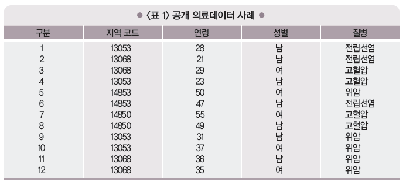
이 표는 개인정보인가?
- 미국 매사추세츠 주 공무원 단체보험위원회(GIC)는 주 공무원의 병원 이용 기록을 연구 목적으로 공개
- 이름·주소·사회보장번호는 삭제하고 우편번호·생년월일·성별·진단명 등은 남김
연결 공격 (linkage attack)
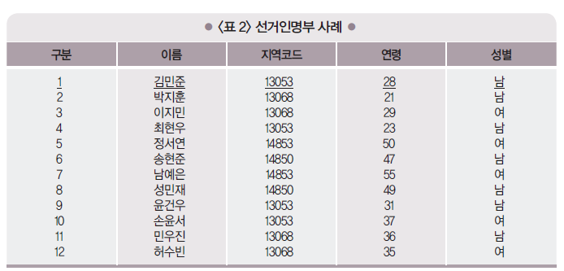
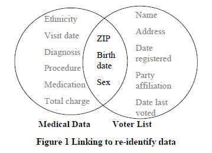
우편번호·생년월일·성별을 기준으로 두 데이터를 연결하자 환자의 신원이 드러났다. 당시 매사추세츠 주지사의 진료 기록도 특정되었다.
Latanya Sweeney (2002), “k-anonymity: A Model for Protecting Privacy”
사례 (2) Netflix Prize Dataset
- 2006년 Netflix의 추천(collaborative filtering) 알고리즘 경진대회
- Netflix 알고리즘의 성능을 10% 개선하면 상금 100만 달러
- <영화, 이용자, 평가 일자, 평점(1~5)> 1억여 건을 공개. 이용자 ID는 가명으로 바꿈
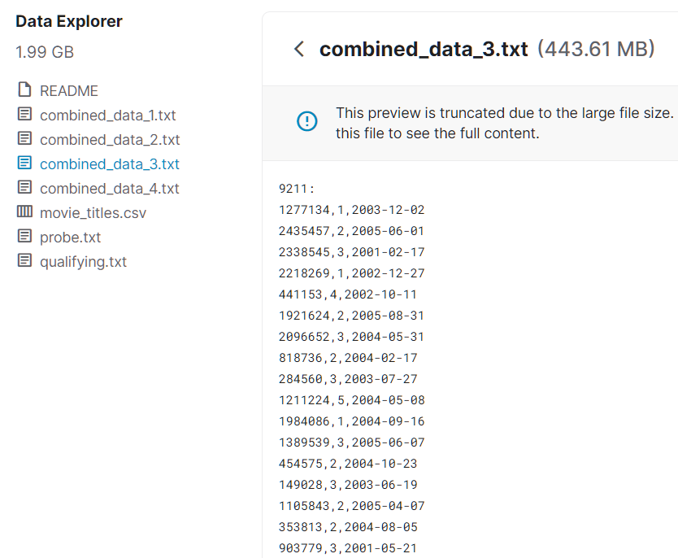
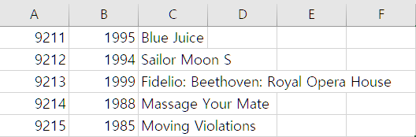
개인정보인가?
Netflix Prize Dataset 재식별
- Narayanan & Shmatikov (2008), “Robust De-anonymization of Large Sparse Datasets”
- IMDb(영화 데이터베이스)에 실명으로 남긴 평점·후기와 연결하여 이용자 식별에 성공
- 식별된 이용자가 본 영화 목록에서 정치적 성향 등 민감정보를 추론할 수 있음
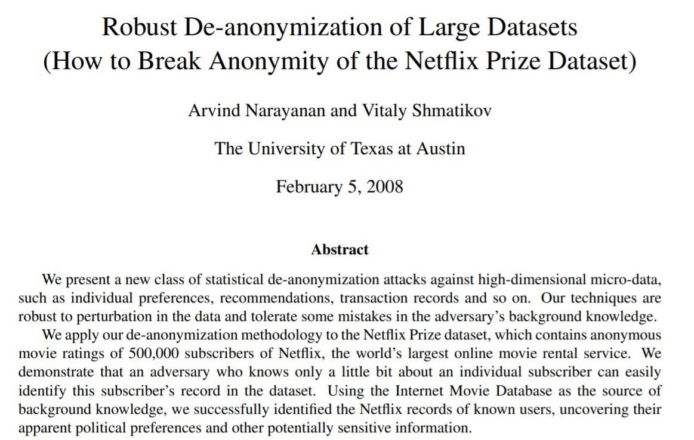
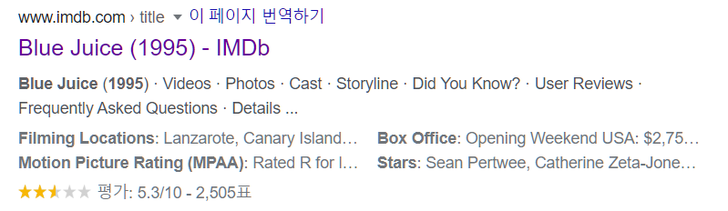
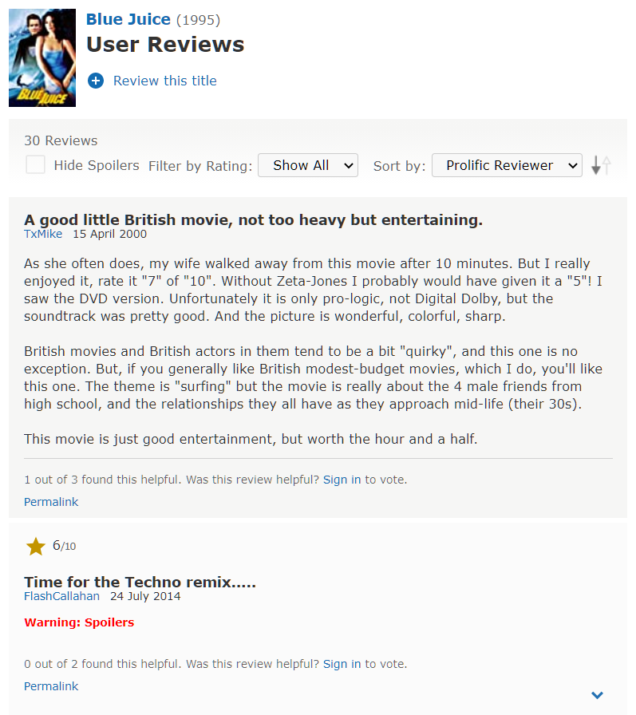
사례 (3) AOL Search Data
- 2006년 8월 AOL Research는 약 65만 명의 검색어 2천만 건을 공개
- 공개 데이터: {AnonID, Query, QueryTime, ItemRank, ClickURL}
- AnonID: 익명 이용자 번호 · Query: 검색어
- QueryTime: 검색 시각 · ItemRank: 클릭한 검색 결과의 순위 · ClickURL: 클릭한 결과의 도메인
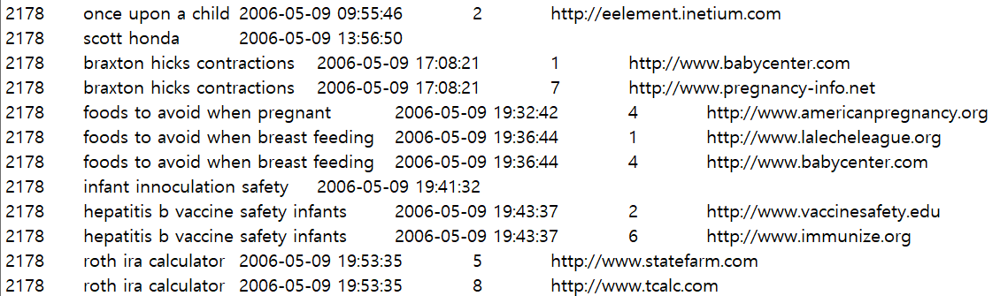
AOL Search Data 재식별
- #4417749
- “numb fingers”, “60 single men”, “dog that urinates on everything” 등 검색
- “landscapers in Lilburn, Ga”, “homes sold in shadow lake subdivision gwinnett county georgia”
- Arnold가 성(姓)인 사람을 여러 차례 검색
- New York Times는 이 검색어로 그가 조지아주 Lilburn에 사는 Thelma Arnold임을 확인. 본인 동의를 얻어 얼굴을 공개
- 민감한 검색어의 문제
- “child porno”, “how to kill oneself by natural gas”
- 범죄를 저질렀을 가능성을 드러내는 검색어 등
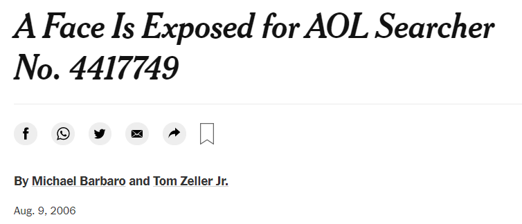
AOL Search Data 비식별 조치의 평가
일부 데이터라도 개인을 식별할 수 있다면 거센 비판에 직면할 수 있다
AOL은 데이터를 공개한 지 며칠 만에 삭제했지만 사본은 이미 퍼진 뒤였다. 재식별 위험은 “평균”이 아니라 “가장 취약한 사례”로 평가받는다.
개인정보의 개념
개인정보 보호법 제2조 제1호. 이름처럼 그 자체로 개인을 알아볼 수 있는 정보와, 다른 정보와 결합하면 알아볼 수 있는 정보로 나뉜다.
개인정보의 개념 (1) 개인식별정보
제2조(정의)
이 법에서 사용하는 용어의 뜻은 다음과 같다.
1. “개인정보”란 살아 있는 개인에 관한 정보로서 다음 각 목의 어느 하나에 해당하는 정보를 말한다.
가. 성명, 주민등록번호 및 영상 등을 통하여 개인을 알아볼 수 있는 정보
개인식별정보 직접 식별자(direct identifier): 개인에게 고유하게 부여된 값
- 고유식별정보(주민등록번호, 여권번호, 외국인등록번호, 운전면허번호)
- 성명(한자·영문 성명, 필명 등 포함)
- 상세 주소(구 단위 미만까지 포함된 주소)
- 날짜정보: 생일(양/음력), 기념일(결혼, 돌, 환갑 등), 자격증 취득일 등
- 전화번호(휴대전화, 집전화, 회사전화, 팩스)
- 의료기록번호, 건강보험번호, 복지 수급자 번호
- 통장계좌번호, 신용카드번호
- 각종 자격증 및 면허 번호
- 자동차 번호, 각종 기기의 등록번호·일련번호
- 사진(정지사진, 동영상, CCTV 영상 등)
- 신체 식별정보(지문, 음성, 홍채 등)
- 이메일 주소, IP 주소, MAC 주소, 홈페이지 URL 등
- 식별코드(아이디, 사원번호, 고객번호 등)
- …
다음 사람은 누구일까요?
| 출생연도 | 1974년 |
|---|---|
| 고향 | 서울 강남구 |
| 신장 | 205cm |
| 몸무게 | 110kg |
| 병역 | 면제 |
| 학력 | 사회체육학 학사 |
| 대학 | 연세대 |
이름, 주민등록번호 같은 직접 식별자는 하나도 없다. 그래도 누구인지 알 수 있을까?
다음 사람은 누구일까요?
| 출생연도 | 1974년 |
|---|---|
| 고향 | 서울 강남구 |
| 신장 | 205cm |
| 몸무게 | 110kg |
| 병역 | 면제 |
| 학력 | 사회체육학 학사 |
| 대학 | 연세대 |
직접 식별자가 없더라도 개인을 식별할 수 있음
개인정보의 개념 (2) 식별가능정보
제2조(정의)
1. “개인정보”란 살아 있는 개인에 관한 정보로서 다음 각 목의 어느 하나에 해당하는 정보를 말한다.
가. 성명, 주민등록번호 및 영상 등을 통하여 개인을 알아볼 수 있는 정보
나. 해당 정보만으로는 특정 개인을 알아볼 수 없더라도 다른 정보와 쉽게 결합하여 알아볼 수 있는 정보. 이 경우 쉽게 결합할 수 있는지 여부는 다른 정보의 입수 가능성 등 개인을 알아보는 데 소요되는 시간, 비용, 기술 등을 합리적으로 고려하여야 한다.
식별가능정보 간접·준 식별자(quasi-identifier): 다른 정보와 결합하여 개인 식별 가능
개인 특성
- 성별, 연령, 국적, 고향, 시·군·구명, 우편번호
- 병역·결혼 여부, 종교, 취미, 동호회
- 흡연·음주·채식 여부, 관심사항
신체 특성
- 혈액형, 신장, 몸무게, 허리둘레, 혈압, 눈동자 색깔
- 신체검사 결과, 장애유형·등급
- 병명, 상병코드, 투약코드, 진료내역
신용 특성
- 세금 납부액, 신용등급, 기부금
- 건강보험료 납부액, 소득분위, 의료 급여자
경력 특성
- 학교명, 학과명, 학년, 성적, 학력
- 경력, 직업, 직종, 직장명, 부서명, 직급, 전 직장명
전자적 특성
- 쿠키, 접속·방문 일시, 서비스 이용 기록, 접속로그
- 인터넷 접속기록, 휴대전화 사용기록, GPS 데이터
가족 특성
- 배우자·자녀·부모·형제 등 가족 정보
- 법정대리인 정보
개인정보의 수집·이용
개인정보는 제15조 제1항의 근거 가운데 하나가 있어야 수집할 수 있고, 수집 목적의 범위에서만 이용할 수 있다. 동의는 그 근거 가운데 하나다.
개인정보의 수집·이용
제15조(개인정보의 수집·이용)
① 개인정보처리자는 다음 각 호의 어느 하나에 해당하는 경우에는 개인정보를 수집할 수 있으며 그 수집 목적의 범위에서 이용할 수 있다.
1. 정보주체의 동의를 받은 경우
2. 법률에 특별한 규정이 있거나 법령상 의무를 준수하기 위하여 불가피한 경우
3. 공공기관이 법령 등에서 정하는 소관 업무의 수행을 위하여 불가피한 경우
4. 정보주체와 체결한 계약을 이행하거나 계약을 체결하는 과정에서 정보주체의 요청에 따른 조치를 이행하기 위하여 필요한 경우
5. 명백히 정보주체 또는 제3자의 급박한 생명, 신체, 재산의 이익을 위하여 필요하다고 인정되는 경우
6. 개인정보처리자의 정당한 이익을 달성하기 위하여 필요한 경우로서 명백하게 정보주체의 권리보다 우선하는 경우. 이 경우 개인정보처리자의 정당한 이익과 상당한 관련이 있고 합리적인 범위를 초과하지 아니하는 경우에 한한다.
7. 공중위생 등 공공의 안전과 안녕을 위하여 긴급히 필요한 경우
② 개인정보처리자는 제1항제1호에 따른 동의를 받을 때에는 다음 각 호의 사항을 정보주체에게 알려야 한다. 다음 각 호의 어느 하나의 사항을 변경하는 경우에도 이를 알리고 동의를 받아야 한다.
1. 개인정보의 수집·이용 목적 2. 수집하려는 개인정보의 항목 3. 개인정보의 보유 및 이용 기간 4. 동의를 거부할 권리가 있다는 사실 및 동의 거부에 따른 불이익이 있는 경우에는 그 불이익의 내용
③ 개인정보처리자는 당초 수집 목적과 합리적으로 관련된 범위에서 정보주체에게 불이익이 발생하는지 여부, 암호화 등 안전성 확보에 필요한 조치를 하였는지 여부 등을 고려하여 대통령령으로 정하는 바에 따라 정보주체의 동의 없이 개인정보를 이용할 수 있다.
(1) 동의를 받은 경우 제15조 제1항 제1호
- 동의의 방식에는 제한이 없음 (예: 서명, 기명날인, ‘동의’ 버튼 클릭, 구두)
- 동의를 받을 때 알릴 사항 (변경할 때에도 다시 알리고 동의를 받아야 함)
- 개인정보의 수집·이용 목적
- 수집하려는 개인정보의 항목
- 개인정보의 보유 및 이용 기간
- 동의를 거부할 권리가 있다는 사실 및 동의 거부에 따른 불이익이 있는 경우에는 그 불이익의 내용
- 동의 취득의 방식
- Opt-in: 개인정보 처리 목적을 알리고 명시적 동의를 얻어야 처리 가능
- Opt-out: 처리 목적을 통지하고, 정보주체가 이의를 제기하지 않으면 처리 가능
개인정보 보호법은 Opt-in 방식을 취하고 있음
개인정보 수집·이용 동의서 (예시)
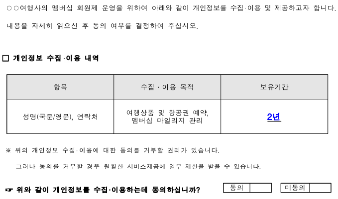
항목·목적·보유기간·거부권을 표로 알리고, 동의 여부를 따로 표시하게 한다.
[사례] 홈플러스 경품행사 사건
- 사실관계
- 홈플러스는 보험회사와 경품행사로 얻는 개인정보를 1건당 1,980원에 판매한다는 업무제휴약정을 체결
- 경품 당첨을 기대하고 응모하는 고객의 개인정보를 수집하여 보험회사에 대가를 받고 판매할 목적으로 경품행사를 기획·시행 (기존 회원정보만으로는 판매할 개인정보가 부족했음)
- 응모권 용지에 개인정보 수집 및 제3자 제공에 관한 내용을 약 1㎜ 크기로 인쇄
- 경품행사에 필요한 범위를 넘어 개인정보를 수집하고, 동의하지 않으면 경품 추첨에서 배제
개인정보 보호법 위반으로 기소
[사례] 홈플러스 경품행사 응모권
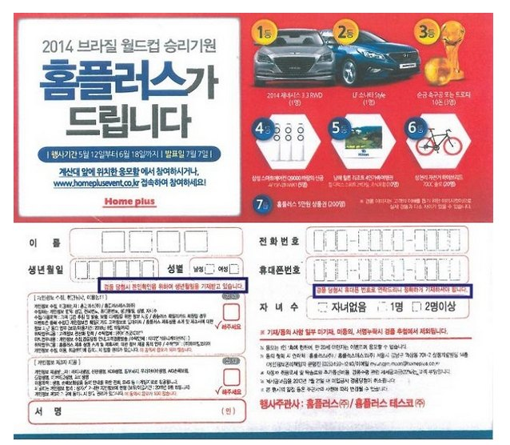
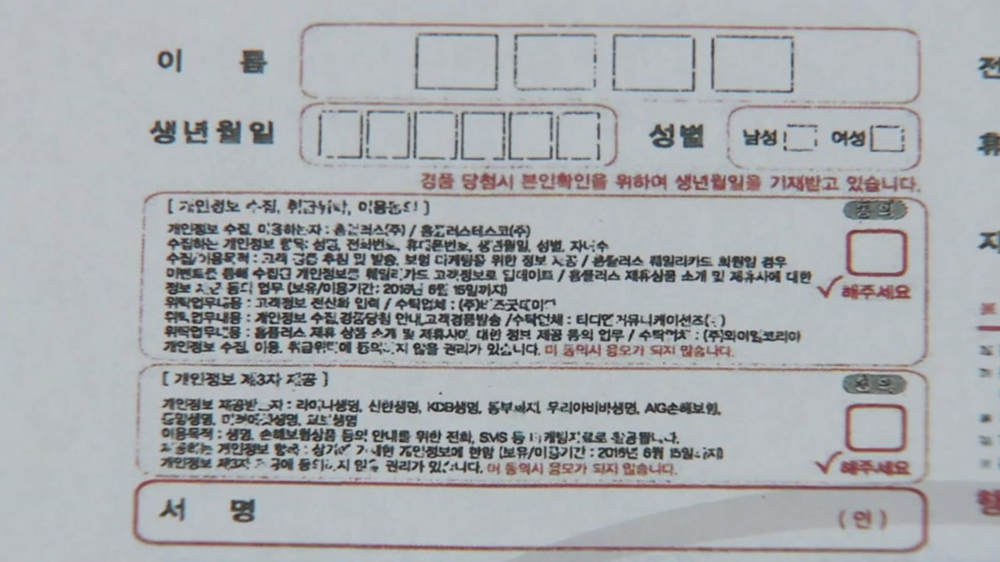
[사례] 홈플러스: 1심·2심 법원의 판단 (무죄)
- 개인정보 수집과 처리에 관한 동의를 받을 때 정보주체에게 알려야 하는 사항을 응모권에 모두 기재하였음
- 개인정보를 ‘유상으로’ 제3자에게 제공한다는 사실까지 알려야 할 의무는 없음. 그 사실이 응모자의 동의 여부 결정에 영향을 미치는 핵심 사항으로 보이지도 않음
- 약 1㎜ 크기의 글씨는 복권, 의약품 사용설명서 등에서 통용되는 크기로 응모자도 읽을 수 있었던 것으로 보임
- 응모함 옆에 응모권 확대 사진을 붙인 점 등에 비추어, 의도적으로 글씨를 작게 하여 읽지 못하게 방해했다고 보기 어려움
- 응모자들은 개인정보가 보험회사에 마케팅 목적으로 제공된다는 사실을 충분히 인식할 수 있는 상태에서 동의하였다고 봄이 상당함
1㎜ 크기의 글씨
형사 처벌: 대법원 2017. 4. 7. 선고 2016도13263 판결
피고인들이 이 사건 광고 및 경품행사의 주된 목적을 숨긴 채 사은행사를 하는 것처럼 소비자들을 오인하게 한 다음 경품행사와는 무관한 고객들의 개인정보까지 수집하여 이를 제3자에게 제공한 점, 피고인들이 이와 같은 행위를 하면서 개인정보 보호법상의 개인정보 보호 원칙 및 제반 의무를 위반한 점, 피고인들이 수집한 개인정보에는 사생활의 비밀에 관한 정보나 심지어는 고유식별정보 등도 포함되어 있는 점 및 피고인들이 수집한 개인정보의 규모 및 이를 제3자에게 판매함으로써 얻은 이익 등을 종합적으로 고려하여 보면, 피고인들은 개인정보 보호법 제72조 제2호에 규정된 ‘거짓이나 그 밖의 부정한 수단이나 방법으로 개인정보를 취득하거나 개인정보 처리에 관한 동의를 받는 행위를 한 자’에 해당한다고 보는 것이 옳다.
형식적 고지 요건을 갖추었더라도, 동의를 받는 과정 전체가 부정한 방법이면 처벌 대상이 됨
(2) 법률의 규정·법령상 의무 준수 제2호
법률에 특별한 규정이 있는 경우 (전단)
- 신용정보법상 채권추심업 허가를 받은 신용정보회사가 그 업무를 위해 특정인의 소재 등을 알아내는 경우
- 보험업법상 보험회사가 보험금 지급업무에 필요한 경우 음주운전 등 교통법규 위반이나 운전면허 효력에 관한 정보를 보유 기관에서 제공받는 경우
- 의료법상 의료인이 환자가 의식이 없거나 응급환자인 경우 등 동의를 받을 수 없을 때 진료기록 내용 등을 다른 의료인에게 송부하는 경우
법령상 의무 준수에 불가피한 경우 (후단)
- 소비자기본법상 결함상품 리콜의무를 이행하기 위하여 개인정보를 수집·이용하는 경우
- 각종 법령에 따른 본인확인 또는 연령확인 의무를 이행하기 위하여 개인정보를 수집·이용하는 경우 (금융실명법, 청소년보호법 등)
(3) 공공기관의 소관 업무 수행 제3호
- 법령 등에서 소관 업무를 정하고 있고, 그 업무 수행을 위해 불가피하게 개인정보를 수집해야 하는 경우 정보주체의 동의 없이 수집 가능
- 제2호의 ‘법령상 의무 준수’에 포함된다고 볼 수도 있으나, 의무 준수와 소관 업무 수행의 차이를 분명히 하려고 따로 규정
- 예시
- 인사혁신처가 정부조직법에 따라 공무원의 인사·윤리·복무·연금 관리를 위해 인사 관련 파일을 수집·이용하거나 국가인재데이터베이스를 구축·운영하는 경우
- 국민건강보험공단이 국민건강보험법에 따라 보험급여 관리를 위하여 진료내역 등을 수집·이용하는 경우
(4) 정보주체와의 계약 체결·이행 제4호
정보주체와 체결한 계약을 이행하거나, 계약을 체결하는 과정에서 정보주체의 요청에 따른 조치를 이행하기 위하여 필요한 경우
계약 체결(준비)
- 보험회사가 계약 체결을 위해 청약자의 자동차사고 이력, 다른 유사보험 가입 여부를 수집
- 거래 체결 전에 상대방의 신용도 평가를 위해 정보를 수집·이용
- 회사가 근로계약 체결 전에 지원자의 이력서, 졸업·성적증명서를 수집·이용
계약 이행
- 주문한 상품을 배송하기 위해 주소, 연락처를 수집
- 경품 당첨자에게 경품을 보내기 위해 주소와 연락처를 요구. 단, 광고에 대한 동의를 받지 않았다면 이 정보로 신상품 안내 이메일 등 광고를 보낼 수 없음
- 쇼핑몰이 주문 시 포인트를 지급하기로 약정하고 주문 정보를 수집
2023년 개정: “필수동의” 관행의 개선
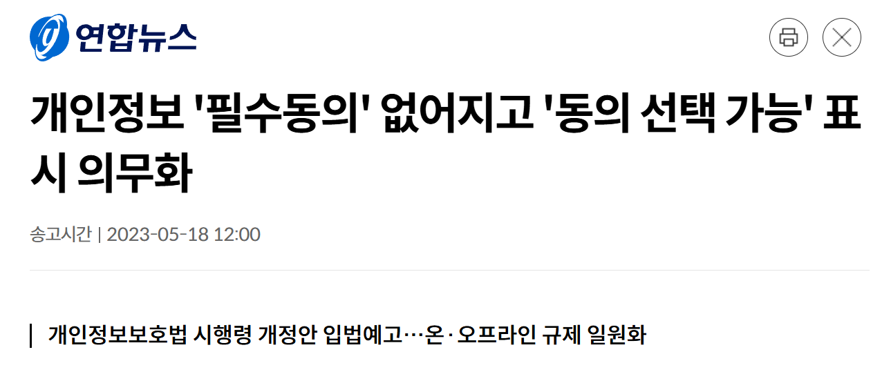
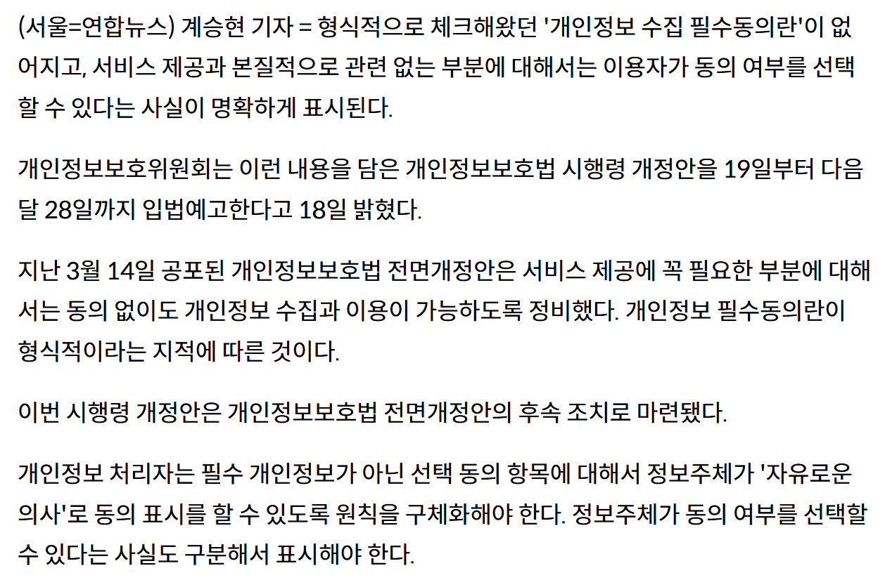
- 계약 이행에 필요한 정보는 제15조 제1항 제4호로 동의 없이 수집할 수 있음
- 그런데도 서비스 이용 전에 “필수동의”를 받는 형식적 관행이 지속되어 옴
- 필수동의는 필요하지 않도록 법과 시행령을 정비함
(5) 급박한 생명·신체·재산상 이익 제5호
- 수집·이용 목적이 명백하게 정보주체 또는 제3자의 급박한 생명·신체·재산상 이익을 위한 것이어야 함
- 2023년 개정 전에는 “정보주체 또는 법정대리인이 의사표시를 할 수 없는 상태에 있거나 주소불명 등으로 사전 동의를 받을 수 없는 경우”라는 요건이 더 있었으나 삭제됨
- 정신미약, 교통사고, 수술, 재난으로 인한 고립, 납치·감금 등은 여전히 대표적인 적용 상황
- 예시
- 조난·홍수 등으로 실종되거나 고립된 사람을 구조하기 위하여 연락처, 주소, 위치정보 등을 수집
- 아파트 화재 시 집 안에 있는 자녀를 구하기 위해 자녀 또는 부모의 휴대전화 번호를 수집
- 의식불명이나 중태에 빠진 환자의 수술 등 의료조치를 위하여 개인정보를 수집
- 고객이 보이스피싱 피해를 입은 것으로 보여 은행이 임시로 이체를 중단하고 사실 확인을 하려는 경우
(6) 개인정보처리자의 정당한 이익 제6호
- 개인정보처리자의 정당한 이익을 달성하기 위하여 필요한 경우로서 명백하게 정보주체의 권리보다 우선하는 경우 동의 없이 수집 가능
- 예시
- 사업자가 요금정산·채권추심 등을 위하여 고객의 서비스 이용내역, 과금내역 등을 생성·관리
- 사업자가 고객과의 소송·분쟁에 대비하여 요금 정산자료, 민원 내용과 대응자료 등을 수집·관리
➜ 전세계약서로 임대인의 정보를 확인하는 것은 은행의 정당한 이익에 해당하고, 임대인의 권리가 침해될 소지가 적다. 은행은 동의 없이 임대인의 개인정보를 수집·이용할 수 있다.
크롤링: 공개된 개인정보의 수집 로앤비 사건
- 사실관계
- 법률정보 사이트 로앤비는 법조인 데이터베이스와 자체 수집한 법학 교수들의 개인정보를 ‘법조인’ 항목에서 유료로 제공
- A 교수의 사진, 성명, 성별, 출생연도, 직업, 직장, 학력, 경력 등을 수집하여 유료로 제3자에게 제공하다가 소장 부본을 송달받고 삭제
- 출생연도를 제외한 정보는 대학 법학과 홈페이지에 이미 공개되어 있었고, 출생연도는 교원명부와 교수요람에 게재되어 있었음
- 쟁점: 영리 목적으로 공개된 개인정보를 수집하여 이용자에게 제공한 행위가 개인정보 보호법 위반인가?
- 서울중앙지방법원 2013나49885 판결
- “언론 고유의 목적을 달성하기 위한 것이 아니라 단순히 영리 목적으로 (…) 공개된 개인정보를 수집하여 이를 제3자에게 제공하는 행위를 정보주체의 동의 없이 한 경우에는, 설령 정보주체가 공적인 존재라 하더라도 다른 특별한 사정이 없는 한 위법”
- 위자료 50만 원 배상
크롤링: 공개된 개인정보의 수집 대법원 2016. 8. 17. 선고 2014다235080 판결
정보주체가 공적인 존재인지, 개인정보의 공공성과 공익성, 원래 공개한 대상 범위, 개인정보 처리의 목적·절차·이용형태의 상당성과 필요성, 개인정보 처리로 침해될 수 있는 이익의 성질과 내용 등 여러 사정을 종합적으로 고려하여, 개인정보에 관한 인격권 보호에 의하여 얻을 수 있는 이익과 정보처리 행위로 얻을 수 있는 이익 즉 정보처리자의 ‘알 권리’와 이를 기반으로 한 정보수용자의 ‘알 권리’ 및 표현의 자유, 정보처리자의 영업의 자유, 사회 전체의 경제적 효율성 등의 가치를 구체적으로 비교 형량하여 어느 쪽 이익이 더 우월한 것으로 평가할 수 있는지에 따라 정보처리 행위의 최종적인 위법성 여부를 판단하여야 하고, 단지 정보처리자에게 영리 목적이 있었다는 사정만으로 곧바로 정보처리 행위를 위법하다고 할 수는 없다.
로앤비의 행위는 개인정보자기결정권을 침해하는 위법한 행위가 아니고, 제15조나 제17조 위반도 아니다
정보주체가 공적인 존재인지, 개인정보의 공공성과 공익성, 원래 공개한 대상 범위, 개인정보 처리의 목적·절차·이용형태의 상당성과 필요성, 개인정보 처리로 침해될 수 있는 이익의 성질과 내용 등 여러 사정을 종합적으로 고려하여 “정당한 이익”을 판단함
제3자 제공과 처리위탁
개인정보가 다른 사업자에게 넘어가는 두 가지 경로. 누구의 업무와 이익을 위해 넘어가는지에 따라 제3자 제공(동의 필요)과 처리위탁(공개·감독 의무)으로 나뉜다.
개인정보의 제3자 제공
제17조(개인정보의 제공)
① 개인정보처리자는 다음 각 호의 어느 하나에 해당되는 경우에는 정보주체의 개인정보를 제3자에게 제공(공유를 포함한다. 이하 같다)할 수 있다.
1. 정보주체의 동의를 받은 경우
2. 제15조제1항제2호, 제3호 및 제5호부터 제7호까지에 따라 개인정보를 수집한 목적 범위에서 개인정보를 제공하는 경우
② 개인정보처리자는 제1항제1호에 따른 동의를 받을 때에는 다음 각 호의 사항을 정보주체에게 알려야 한다. 다음 각 호의 어느 하나의 사항을 변경하는 경우에도 이를 알리고 동의를 받아야 한다.
1. 개인정보를 제공받는 자
2. 개인정보를 제공받는 자의 개인정보 이용 목적
3. 제공하는 개인정보의 항목
4. 개인정보를 제공받는 자의 개인정보 보유 및 이용 기간
5. 동의를 거부할 권리가 있다는 사실 및 동의 거부에 따른 불이익이 있는 경우에는 그 불이익의 내용
④ 개인정보처리자는 당초 수집 목적과 합리적으로 관련된 범위에서 (…) 대통령령으로 정하는 바에 따라 정보주체의 동의 없이 개인정보를 제공할 수 있다.
제3자 제공
- 개인정보의 제3자 제공
- 제3자에게 개인정보의 지배·관리권이 이전되는 것
- DB 시스템 접속 권한을 열어 주는 등 개인정보를 공유하는 경우도 포함
- 제3자 제공이 가능한 경우
- 정보주체의 동의를 받은 경우: 제공받는 자, 제공받는 자의 이용 목적, 제공 항목, 제공받는 자의 보유·이용 기간, 동의 거부권과 불이익을 미리 알려야 함
- 그 밖에: 제15조 제1항 제2호·제3호·제5호~제7호에 따라 수집한 목적 범위에서 제공하는 경우
- 벌칙
- 정보주체의 동의 없이 개인정보를 제3자에게 제공한 자, 그 사정을 알면서 제공받은 자: 5년 이하의 징역 또는 5천만 원 이하의 벌금
개인정보 제3자 제공 동의 (예시)
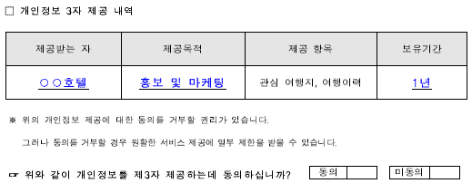
“제공받는 자”는 이름이나 상호로 특정해야 한다. “제휴사”, “금융기관”처럼 포괄적으로 적을 수 없다.
[판결] CCTV 영상을 보여 준 행위도 “제공”
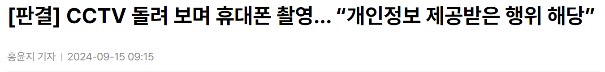
- 장례식장 관리실 직원이 CCTV 영상을 다른 사람에게 보여 주고, 그 사람이 휴대전화로 촬영
- 대법원: 영상 파일을 넘겨주지 않았더라도, 영상을 보여 주어 다른 사람이 그 정보를 알게 한 것은 개인정보 “제공”에 해당 (2020도18397)
- “제공”은 매체를 넘겨주는 행위로 한정되지 않음. 정보를 알 수 있는 상태에 두는 것이 핵심
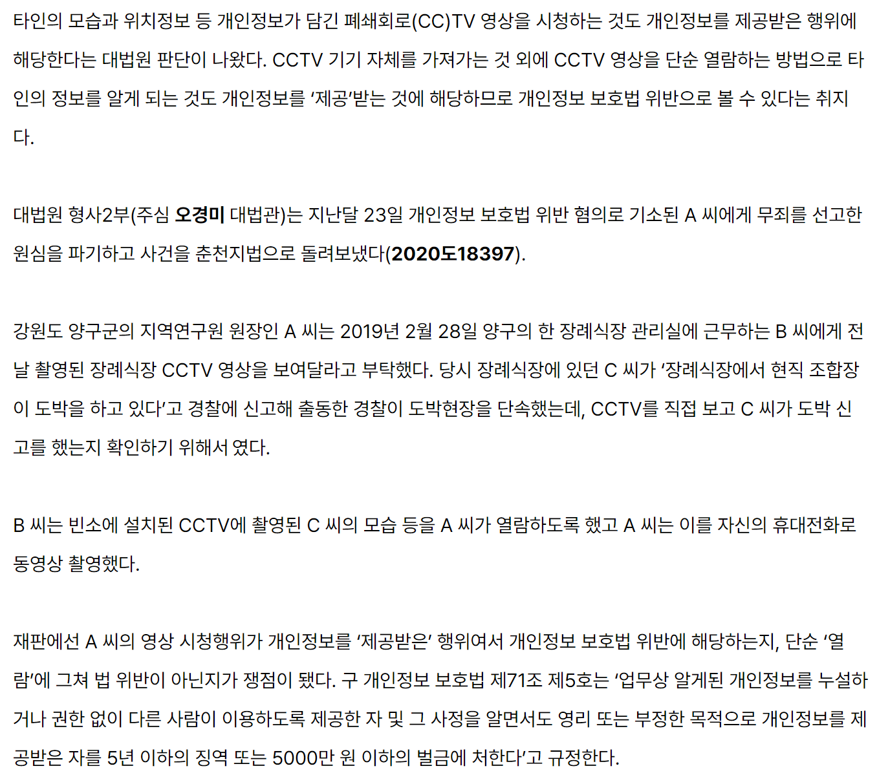
목적 외 이용·제공 제한
제18조(개인정보의 목적 외 이용·제공 제한)
① 개인정보처리자는 개인정보를 제15조제1항에 따른 범위를 초과하여 이용하거나 제17조제1항 및 제28조의8제1항에 따른 범위를 초과하여 제3자에게 제공하여서는 아니 된다.
② 제1항에도 불구하고 개인정보처리자는 다음 각 호의 어느 하나에 해당하는 경우에는 정보주체 또는 제3자의 이익을 부당하게 침해할 우려가 있을 때를 제외하고는 개인정보를 목적 외의 용도로 이용하거나 이를 제3자에게 제공할 수 있다. 다만, 제5호부터 제9호까지에 따른 경우는 공공기관의 경우로 한정한다.
1. 정보주체로부터 별도의 동의를 받은 경우
2. 다른 법률에 특별한 규정이 있는 경우
3. 명백히 정보주체 또는 제3자의 급박한 생명, 신체, 재산의 이익을 위하여 필요하다고 인정되는 경우
4. 삭제 (2020년 가명정보 제도 도입)
5. 개인정보를 목적 외의 용도로 이용하거나 이를 제3자에게 제공하지 아니하면 다른 법률에서 정하는 소관 업무를 수행할 수 없는 경우로서 보호위원회의 심의·의결을 거친 경우
6. 조약, 그 밖의 국제협정의 이행을 위하여 외국정부 또는 국제기구에 제공하기 위하여 필요한 경우
7. 범죄의 수사와 공소의 제기 및 유지를 위하여 필요한 경우
8. 법원의 재판업무 수행을 위하여 필요한 경우
9. 형(刑) 및 감호, 보호처분의 집행을 위하여 필요한 경우
10. 공중위생 등 공공의 안전과 안녕을 위하여 긴급히 필요한 경우
개인정보의 목적 외 이용·제공 금지
개인정보처리자는 원칙적으로 정보주체에게 알리고 동의를 받은 범위나 법령상 허용된 범위를 벗어나 개인정보를 이용·제공할 수 없다.
- 목적 외 이용 사례
- 공무원에게 업무용으로 발급한 이메일 주소로 사전 동의 없이 마케팅 홍보자료를 발송
- 조세 담당 공무원이 자신과 채권채무 소송 중인 사람의 납세 정보를 조회하여 소송에 이용
- 상품 배송을 위해 수집한 개인정보를 동의 받지 않은 자사의 별도 상품·서비스 홍보에 이용
- 고객 만족도 조사, 판촉·경품행사 응모를 위해 입력한 개인정보를 동의 없이 할인판매 광고물 발송에 이용
- A/S센터에서 고객 불만을 처리하려고 수집한 개인정보를 자사 신상품 광고에 이용
- 공개된 개인정보의 성격과 공개 취지에 비추어 그 공개 목적을 넘어 DB 마케팅에 이용
데이터베이스 마케팅 사업
- 데이터베이스 마케팅 사업의 예
- 정보주체의 동의를 받아 대량의 개인정보를 수집·저장해 두고 판매·대여하는 사업
- 개인정보 데이터베이스를 최신 상태로 갱신해 주는 사업
- 수집한 개인정보로 상품 광고를 대행하는 서비스
- 국내에서의 허용 가능성
- 제3자 제공에는 정보주체의 동의가 필요하고, 동의를 받을 때 “개인정보를 제공받는 자”를 알려야 함
- 제공받는 자의 이름 또는 상호를 알려야 하며 “금융기관” 등으로 포괄적으로 알릴 수 없음
- 새로운 제3자에게 제공할 때마다 동의를 다시 받아야 하므로 사업 수행이 현실적으로 어려움
- 다만 비식별화된 정보(통계 정보 등)는 개인정보가 아니므로 제3자에게 (유상으로) 제공할 수 있음
개인정보의 처리위탁
제26조(업무위탁에 따른 개인정보의 처리 제한)
① 개인정보처리자가 제3자에게 개인정보의 처리 업무를 위탁하는 경우에는 다음 각 호의 내용이 포함된 문서로 하여야 한다.
1. 위탁업무 수행 목적 외 개인정보의 처리 금지에 관한 사항
2. 개인정보의 기술적·관리적 보호조치에 관한 사항
3. 그 밖에 개인정보의 안전한 관리를 위하여 대통령령으로 정한 사항
② 제1항에 따라 개인정보의 처리 업무를 위탁하는 개인정보처리자(이하 “위탁자”라 한다)는 위탁하는 업무의 내용과 개인정보 처리 업무를 위탁받아 처리하는 자(개인정보 처리 업무를 위탁받아 처리하는 자로부터 위탁받은 업무를 다시 위탁받은 제3자를 포함하며, 이하 “수탁자”라 한다)를 정보주체가 언제든지 쉽게 확인할 수 있도록 대통령령으로 정하는 방법에 따라 공개하여야 한다.
시행령 제28조(개인정보의 처리 업무 위탁 시 조치)
① 법 제26조제1항제3호에서 “대통령령으로 정한 사항”이란 다음 각 호의 사항을 말한다.
1. 위탁업무의 목적 및 범위
2. 재위탁 제한에 관한 사항
3. 개인정보에 대한 접근 제한 등 안전성 확보 조치에 관한 사항
4. 위탁업무와 관련하여 보유하고 있는 개인정보의 관리 현황 점검 등 감독에 관한 사항
5. 수탁자가 준수하여야 할 의무를 위반한 경우의 손해배상 등 책임에 관한 사항
② 법 제26조제2항에서 “대통령령으로 정하는 방법”이란 (…) 위탁자의 인터넷 홈페이지에 위탁하는 업무의 내용과 수탁자를 지속적으로 게재하는 방법을 말한다.
제3자 제공과 처리위탁의 구별
| 구분 | 처리위탁 (제26조) | 제3자 제공 (제17조) |
|---|---|---|
| 누구의 업무인가 | 위탁자의 업무를 처리하기 위해 개인정보가 넘어감 | 제공받는 자의 업무를 처리하기 위해 개인정보가 넘어감 |
| 누구의 이익인가 | 위탁자의 이익. 수탁자는 위탁 대가 외에 독자적 이익이 없음 | 제공받는 자의 이익 |
| 관리·감독 | 위탁자의 관리·감독 아래, 위탁받은 범위에서만 처리 | 제공받는 자가 자신의 책임으로 처리 (지배·관리권 이전) |
| 정보주체 동의 | 원칙적으로 불필요. 위탁 내용과 수탁자를 공개 (홍보·판매 권유 업무는 통지) | 원칙적으로 필요 (제공받는 자, 목적, 항목, 기간, 거부권 고지) |
| 손해배상 책임 | 수탁자의 법 위반으로 생긴 손해에 대해 수탁자를 위탁자의 소속 직원으로 봄 (위탁자 책임) | 제공받는 자가 스스로 책임 |
| 예시 | 상품 배송, 콜센터·고객상담 운영, 회원관리 시스템 운영·유지보수, 클라우드 보관, 결제대행 | 제휴사 마케팅을 위한 회원정보 제공, 보험회사에 고객 명단 판매, 다른 사업자와의 정보 공유 |
개인정보보호위원회, 「개인정보 보호 법령 및 지침·고시 해설」 제26조 해설을 바탕으로 정리
구별의 판단 기준 대법원 2017. 4. 7. 선고 2016도13263 판결
개인정보 보호법 제17조에서 말하는 개인정보의 ‘제3자 제공’은 본래의 개인정보 수집·이용 목적의 범위를 넘어 정보를 제공받는 자의 업무처리와 이익을 위하여 개인정보가 이전되는 경우인 반면, 제26조에서 말하는 개인정보의 ‘처리위탁’은 본래의 개인정보 수집·이용 목적과 관련된 위탁자 본인의 업무 처리와 이익을 위하여 개인정보가 이전되는 경우를 의미한다. 개인정보 처리위탁에 있어 수탁자는 위탁자로부터 위탁사무 처리에 따른 대가를 지급받는 것 외에는 개인정보 처리에 관하여 독자적인 이익을 가지지 않고, 정보제공자의 관리·감독 아래 위탁받은 범위 내에서만 개인정보를 처리하게 되므로, 제17조에 정한 ‘제3자’에 해당하지 않는다.
앞서 본 홈플러스 사건에서 회원정보를 보험회사에 넘겨 보험회사가 영업 대상 고객을 미리 걸러내게 한 행위가 처리위탁인가? 홈플러스 측은 “처리위탁”이라고 주장했으나, 대법원은 보험회사의 영업을 위한 “제3자 제공”으로 보았음. 계약서의 명칭이 아니라 실질을 바탕으로 판단함.
위탁자와 수탁자의 의무 제26조, 2023년 개정 반영
| 조항 | 내용 | 의무 주체 |
|---|---|---|
| ① | 문서로 위탁: 목적 외 처리 금지, 기술적·관리적 보호조치, 위탁 목적·범위, 재위탁 제한, 안전성 확보조치, 관리 현황 점검 등 감독, 손해배상 책임 | 위탁자 |
| ② | 위탁 사실 공개: 위탁 업무 내용과 수탁자(재수탁자 포함)를 홈페이지에 지속적으로 게재. 홈페이지가 없으면 사업장 게시, 관보·신문 게재 등 | 위탁자 |
| ③ | 홍보·판매 권유 업무를 위탁하는 경우: 위탁 업무 내용과 수탁자를 정보주체에게 서면·전자우편·문자 등으로 개별 통지 | 위탁자 |
| ④ | 교육과 감독: 분실·도난·유출·위조·변조·훼손을 막도록 수탁자를 교육하고, 처리 현황 점검 등으로 안전한 처리를 감독 | 위탁자 |
| ⑤ | 위탁받은 업무 범위를 넘어 개인정보를 이용하거나 제3자에게 제공 금지 | 수탁자 |
| ⑥ | 재위탁하려면 위탁자의 동의를 받아야 함 (2023년 신설) | 수탁자 |
| ⑦ | 수탁자가 이 법을 위반하여 발생한 손해배상책임에 대해서는 수탁자를 개인정보처리자의 소속 직원으로 봄 | 위탁자 |
| ⑧ | 수탁자에게도 개인정보처리자의 의무 규정을 준용. 2023년 개정으로 준용 범위가 넓어져 수탁자도 안전조치 위반 등으로 직접 제재를 받을 수 있음 | 수탁자 |
국외로 위탁하는 경우 제28조의8 (2023년 신설)
- 국외 이전의 범위: 국외 제3자 제공뿐 아니라 국외에서의 처리위탁·보관도 포함
- 국외 이전이 가능한 경우 (제1항)
- 정보주체로부터 국외 이전에 관한 별도의 동의를 받은 경우
- 법률, 조약 등에 특별한 규정이 있는 경우
- 정보주체와의 계약 체결·이행을 위해 처리위탁·보관이 필요한 경우로서 이전 항목, 이전 국가·시기·방법, 이전받는 자, 이용 목적과 보유 기간 등을 개인정보 처리방침에 공개하거나 전자우편 등으로 알린 경우
- 이전받는 자가 보호위원회가 정한 개인정보 보호 인증을 받은 경우, 이전 대상 국가의 보호 수준이 이 법과 실질적으로 동등하다고 인정되는 경우
- 처리위탁이면 동의 없이 공개·고지로 국외 이전할 수 있지만, 제3자 제공이면 별도 동의가 필요하다. 그래서 위탁인지 제공인지가 국외 이전 사건의 핵심 쟁점이 된다
[사례] 개인정보 해외 위탁처리: 카카오페이 사건
- 카카오페이는 애플 앱스토어의 결제수단으로 들어가려 함. 애플은 이용자별 NSF(Non-Sufficient Funds) 점수, 곧 잔액 부족 위험 점수를 요구
- 애플은 NSF 점수 산출 업무를 알리페이(싱가포르 법인)에 맡김
- 카카오페이는 2018년 4~7월 NSF 모델 구축용으로 이용자 정보를 알리페이에 전송. 2019. 6. ~ 2024. 5. 에는 애플 결제 이용 여부와 관계없이 전체 이용자 약 4,000만 명의 정보를 매일 전송 (누적 약 542억 건)
- 전송 항목: 휴대전화번호, 이메일 주소, 잔액 부족 관련 정보 등 24개 항목 (암호화하여 전송)
- 이용자에게 국외 이전 동의를 받지 않음. 카카오페이는 처리위탁이라고 주장
[사례] 카카오페이 사건: 개인정보위 처분과 법원 판결
개인정보보호위원회 처분 (2025. 1.)
- 카카오페이가 이용자 동의 없이 개인정보를 국외(알리페이)로 이전: 국외 이전 규정 위반
- 카카오페이: 과징금 59억 6,800만 원
- 애플: 과징금 24억 500만 원, 과태료 220만 원
- 알리페이: NSF 점수 산출 모델 파기 등 시정명령
- “알리페이는 수탁자이므로 관리·감독 소홀에 불과하다”는 카카오페이의 주장을 받아들이지 않음
서울행정법원 판결 (2026. 6. 11., 원고 청구 기각)
- 애플과 알리페이 사이에는 NSF 점수 산출에 관한 위탁 관계가 인정됨
- 그러나 카카오페이와 알리페이 사이에는 NSF 관련 업무의 위탁 관계를 인정하기 어려움
- 카카오페이의 전송은 애플의 수탁자(알리페이)를 거쳐 제3자인 애플 측에 개인정보를 제공한 것으로, 동의 없는 국외 이전에 해당
- 암호화한 24개 항목과 NSF 점수는 개념상 별개 정보이지만, 이전과 점수 산출의 전체 과정을 보면 실질적으로 동일한 정보
- 카카오페이 항소 (2026. 6.)
NSF 점수는 누구의 업무와 이익을 위한 것이었나? 카카오페이가 아니라 애플이었다
생각해 볼 문제: 외부 AI 서비스에 고객 정보를 넣으면?
처리위탁 쪽으로 기우는 사정
- 요약은 우리 회사의 상담 업무를 위한 것
- AI 기업은 이용료 외에 독자적 이익이 없음: 입력 데이터를 자기 모델 학습에 쓰지 않음
- 계약으로 보관 기간, 목적 외 이용 금지, 재위탁(하위 처리자) 등을 통제하고 점검
제3자 제공 쪽으로 기우는 사정
- AI 기업이 입력 데이터를 자기 모델 개선·학습에 사용
- 우리 회사가 그 처리를 실질적으로 관리·감독할 수 없음
- 입력 데이터를 AI 기업이 다른 목적으로 보관·분석
처리위탁에 해당하려면 AI 서비스 사업자(OpenAI, Google, Anthropic 등)가 입력 데이터를 모델의 개선이나 학습에 사용하지 않고, 다른 목적으로 보관·분석하지 않는 조건으로 서비스 이용 계약을 체결할 필요 있음
민감정보와 생체인식정보
민감정보는 원칙적으로 처리가 금지된다. 얼굴·지문 같은 생체정보는 특정 개인을 알아볼 목적으로 기술적으로 처리될 때 민감정보가 된다.
민감정보의 개념
제23조(민감정보의 처리 제한)
① 개인정보처리자는 사상·신념, 노동조합·정당의 가입·탈퇴, 정치적 견해, 건강, 성생활 등에 관한 정보, 그 밖에 정보주체의 사생활을 현저히 침해할 우려가 있는 개인정보로서 대통령령으로 정하는 정보(이하 “민감정보”라 한다)를 처리하여서는 아니 된다. 다만, 다음 각 호의 어느 하나에 해당하는 경우에는 그러하지 아니하다.
1. 정보주체에게 제15조제2항 각 호 또는 제17조제2항 각 호의 사항을 알리고 다른 개인정보의 처리에 대한 동의와 별도로 동의를 받은 경우
2. 법령에서 민감정보의 처리를 요구하거나 허용하는 경우
② 개인정보처리자가 제1항 각 호에 따라 민감정보를 처리하는 경우에는 그 민감정보가 분실·도난·유출·위조·변조 또는 훼손되지 아니하도록 제29조에 따른 안전성 확보에 필요한 조치를 하여야 한다.
시행령 제18조(민감정보의 범위)
법 제23조제1항 각 호 외의 부분 본문에서 “대통령령으로 정하는 정보”란 다음 각 호의 어느 하나에 해당하는 정보를 말한다. (공공기관이 법 제18조제2항제5호부터 제9호까지에 따라 처리하는 경우는 제외)
1. 유전자검사 등의 결과로 얻어진 유전정보 2. 「형의 실효 등에 관한 법률」 제2조제5호에 따른 범죄경력자료에 해당하는 정보
3. 개인의 신체적, 생리적, 행동적 특징에 관한 정보로서 특정 개인을 알아볼 목적으로 일정한 기술적 수단을 통해 생성한 정보 4. 인종이나 민족에 관한 정보
민감정보의 처리 제한
민감정보의 범위
- 사상·신념, 노동조합·정당의 가입·탈퇴, 정치적 견해
- 건강, 성생활 등에 관한 정보
- 유전정보
- 범죄경력자료 정보
- 생체인식 특징정보
- 인종·민족 정보
원칙적 처리 금지
- 민감정보는 원칙적으로 처리(수집, 보관 등)가 금지됨
- 예외: ① 정보주체의 별도 동의를 받은 경우 ② 법령에서 처리를 요구하거나 허용하는 경우
- 동의를 받을 때에는 다른 개인정보 처리에 대한 동의와 분리하여 민감정보 처리에 대한 동의를 받아야 함
생체정보와 생체인식정보
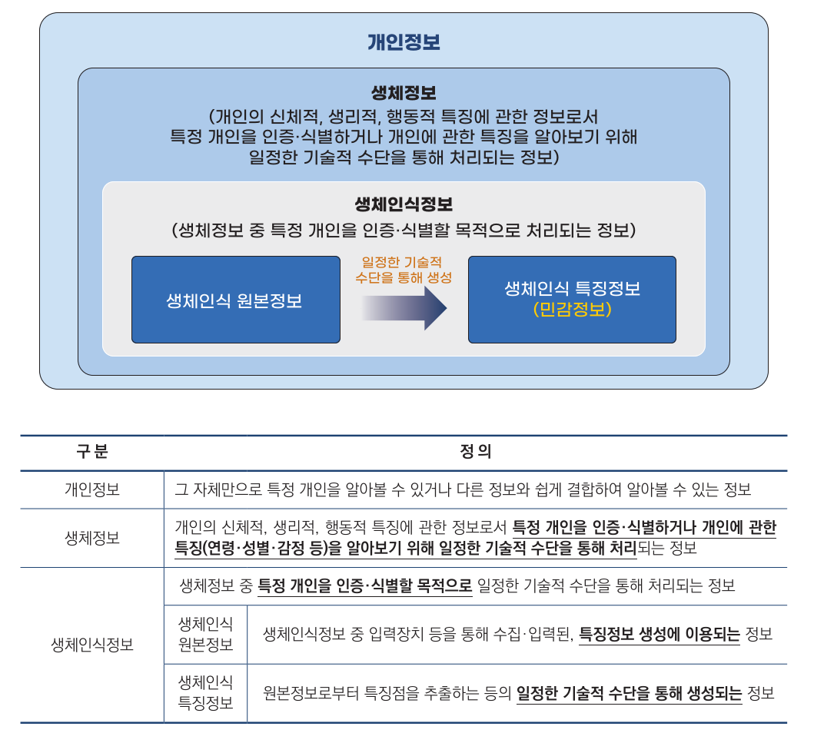
개인정보보호위원회, 생체정보 보호 가이드라인 (2021. 9.)
생체인식 원본정보 vs 생체인식 특징정보
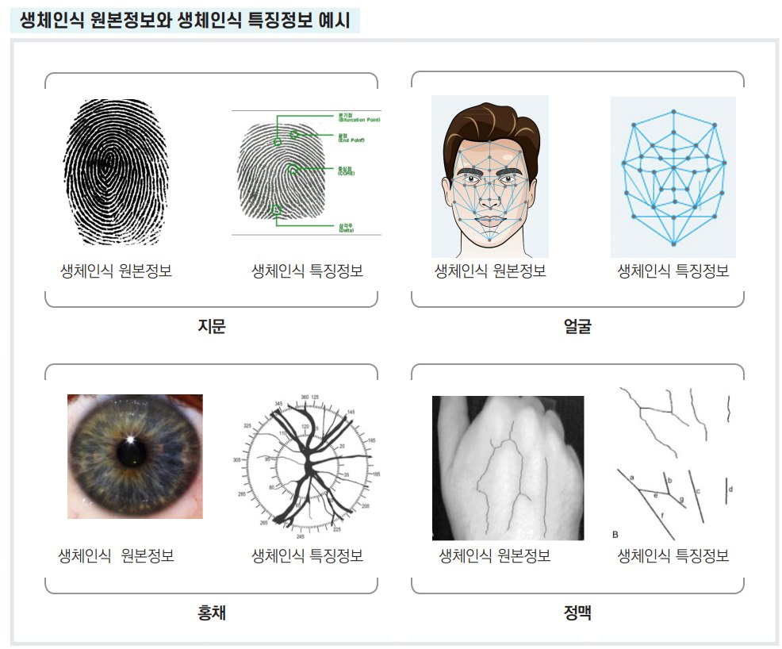
개인정보보호위원회, 생체정보 보호 가이드라인 (2021. 9.)
얼굴 사진은 언제 민감정보가 되는가
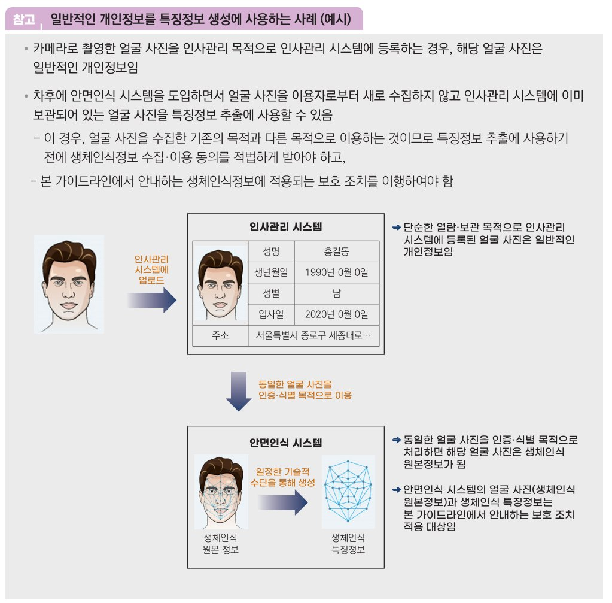
- 인사관리 시스템에 등록한 직원의 얼굴 사진: 일반 개인정보
- 같은 사진으로 안면인식 출입 시스템을 만들려고 특징정보를 추출하면: 생체인식 특징정보 (민감정보)
- 당초 수집 목적과 다른 목적의 처리이므로 별도 동의 등 처리 근거가 필요
개인정보보호위원회, 생체정보 보호 가이드라인 (2021. 9.)
생체인식정보 보호 조치 (총괄표)
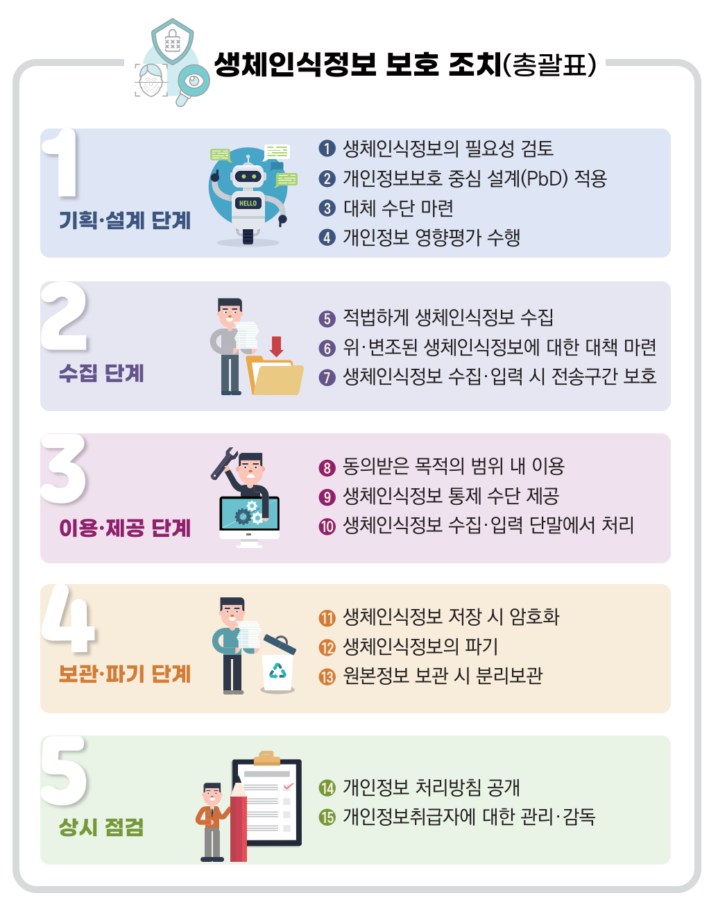
개인정보보호위원회, 생체정보 보호 가이드라인 (2021. 9.)
사례: 출입국 심사 AI 연구개발
앞에서 본 수집 목적, 민감정보, 처리위탁 규정이 하나의 AI 개발 사업에서 함께 문제 된 사례. 개인정보보호위원회 2022. 4. 27. 제2022-007-046호 심의·의결.
정부, 출입국 얼굴사진 1억 7천만 건을 AI 업체에
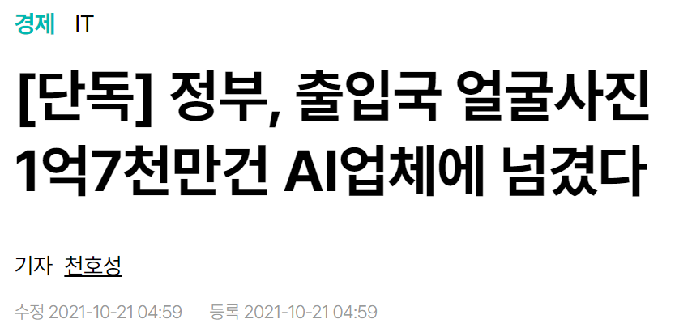
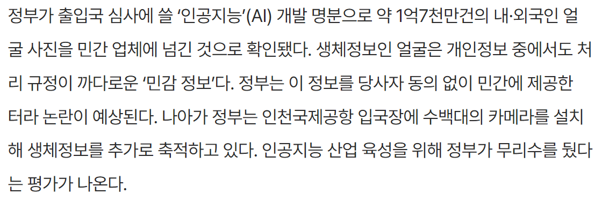
출입국 심사 AI 연구개발 개요
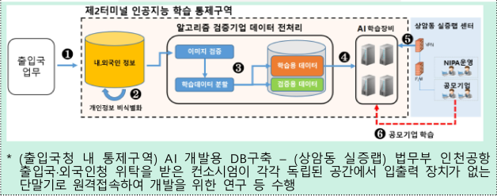
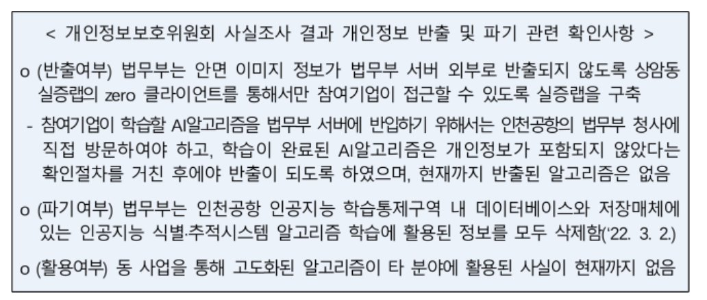
개인정보보호위원회 2022. 4. 27.자 제2022-007-046호 심의·의결
쟁점 (1) 출입국 심사 고도화를 위한 안면 인식
- 출입국관리법은 내·외국인 출입국 심사에서 생체정보의 활용을 허용 (제3조, 제6조, 제12조의2 등)
- 개인정보보호위원회의 판단
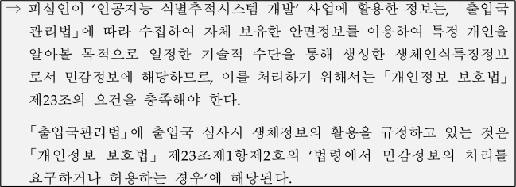
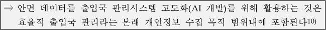
민감정보이지만 법령상 처리 근거가 있고, 수집 목적 범위 안의 이용으로 판단
쟁점 (2) CCTV를 활용한 출입국 심사장 이상행동 추적
- 쟁점: CCTV 영상정보를 출입국 심사장 이상행동 추적을 위한 AI 개발에 이용하는 것이 적법한가
- 출입국관리법상 “출입국 심사” 외의 목적으로 AI 기술개발에 사용할 수 있는 명시적 근거가 없음
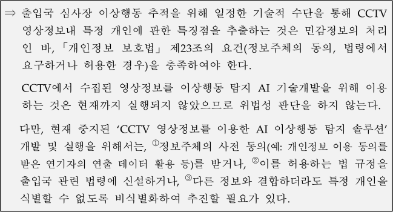
쟁점 (3) 개인정보 처리위탁인지
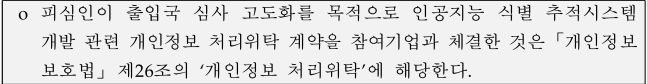
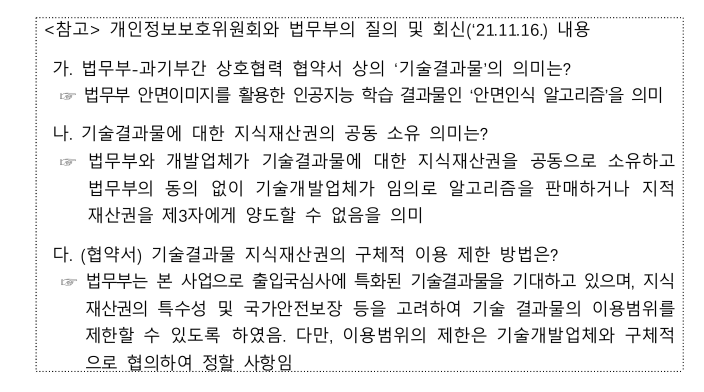
참여기업이 기술결과물의 지식재산권을 공동 소유한다면 “독자적 이익”이 있는 것 아닌가? 법무부는 참여기업이 법무부의 동의 없이 알고리즘을 판매하거나 지식재산권을 양도할 수 없다고 회신했고, 위원회는 처리위탁으로 판단했다.
출입국 심사 AI 연구개발 사건: 결론
- 관련 규정
- 제26조 제2항: 위탁자는 위탁하는 업무의 내용과 수탁자를 정보주체가 언제든지 쉽게 확인할 수 있도록 공개하여야 함
- 시행령 제28조 제2항: 위탁자의 인터넷 홈페이지에 위탁 업무의 내용과 수탁자를 지속적으로 게재
- 위법성 판단
- 법무부가 공모사업 참여기업과 처리위탁 계약을 맺으면서 위탁 사실을 공개하지 않은 것은 제26조 제2항 위반
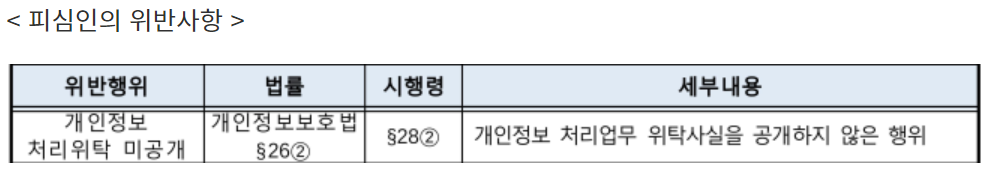
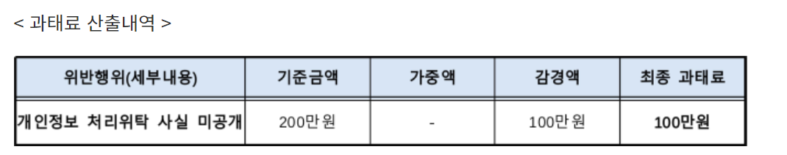
법무부, 개인정보보호법 위반으로 ‘과태료 처분’
AI 에이전트의 개념
대규모 언어모델이 도구·기억·계획 기능과 결합하여 스스로 작업을 수행하는 시스템. 기술 배경은 2강에서 다룬 내용이므로 빠르게 확인한다.
“AI 에이전트” 시대의 도래
- “AI 에이전트”: AI 활용의 새로운 패러다임
- 인지형 AI (2012년~2019년): 텍스트, 이미지 인식
- 생성형 AI (2019년~2024년): 새로운 콘텐츠의 생성
- AI 에이전트 (2024년~현재): 목표를 받아 스스로 계획하고 도구를 써서 작업 수행
인식·분류
텍스트·이미지 생성
계획·도구 사용·실행
로봇·자율주행
NVIDIA 젠슨 황 CEO가 제시한 AI 발전 방향 (자료: 삼일PwC경영연구원)
https://www.pwc.com/kr/ko/insights/issue-brief/ai-agent-in-action.html
대규모 언어모델(LLM)의 역량 확장
- LLM 역량의 급격한 발전
- 언어 이해·답변을 넘어 광범위한 과제 수행 능력을 보임
- 다수 영역에서 인간의 능력을 넘어서기 시작함
- 2023년 GPT-4: 미국 변호사 시험 상위 10% 성적
- 2025년 GPT-5, Gemini 2.5: 세계 대학생 프로그래밍 경시대회 금메달 성적
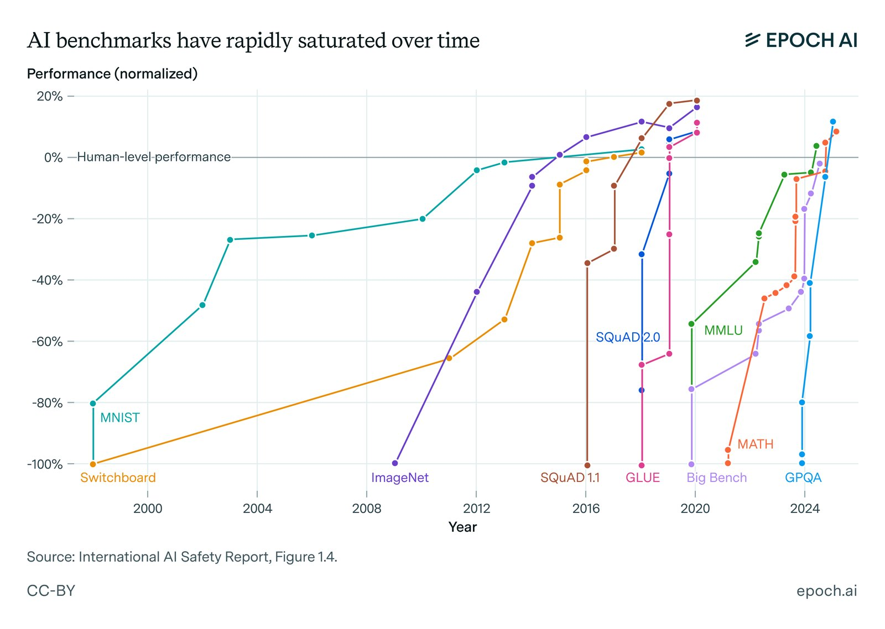
https://epoch.ai/gradient-updates/the-real-reason-ai-benchmarks-havent-reflected-economic-impacts
스케일링 법칙 (Scaling Laws)
- 연산량, 학습 데이터 규모, 모델 파라미터 수가 증가할수록 LLM 성능이 예측 가능하게 향상 (Kaplan et al. 2020). GPT-3 등 대규모 모델 발전의 이론적 기반
- 모델을 “더 크게” 만들면 성능을 높일 수 있으나 세 요소(연산, 데이터, 모델)가 균형 있게 커져야 함. 대규모 투자와 산업 경쟁을 촉발
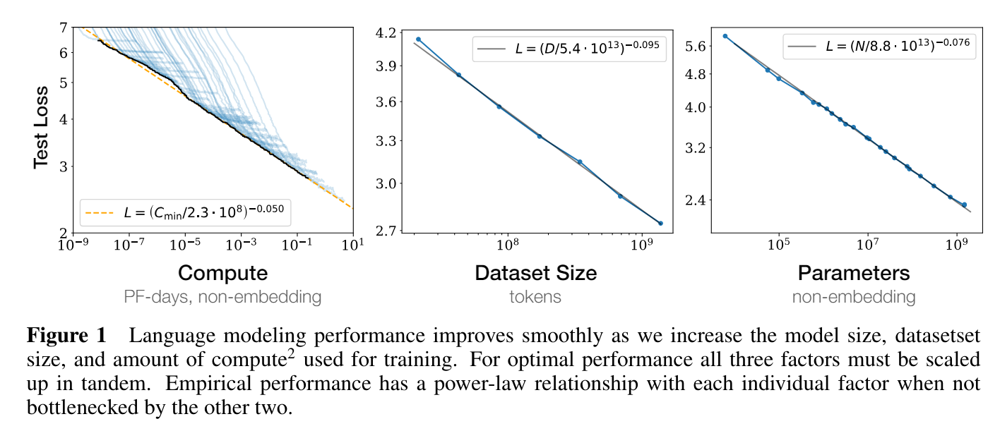
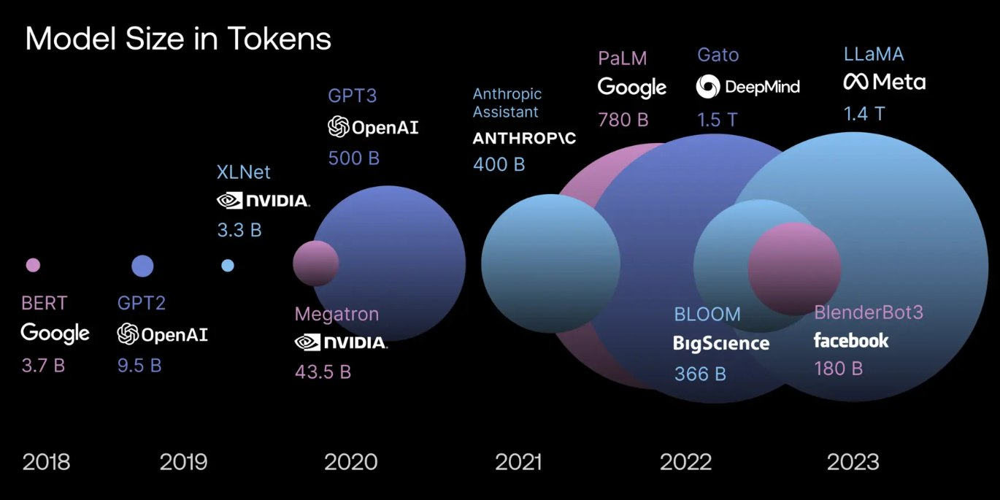
스케일링 법칙의 3단계 진화
- 사전 학습(Pre-Training) 규모 확장: 더 큰 모델, 더 많은 데이터, 더 많은 연산
- 사후 학습(Post-Training) 규모 확장
- 같은 모델도 추가 학습(RLHF 등)으로 성능·안전성 개선 (예: GPT-3 → GPT-3.5)
- 최적화·정렬 과정으로 대중적 활용성 증가 → ChatGPT의 상업적 성공
- 추론 단계(Test-Time) 규모 확장
- 모델의 추론 과정에 더 많은 연산을 투입하여 성능 개선 (예: Chain-of-Thought, 다중 샘플링)
- 모델이 더 오래 추론하게 하여 더 나은 결과를 도출
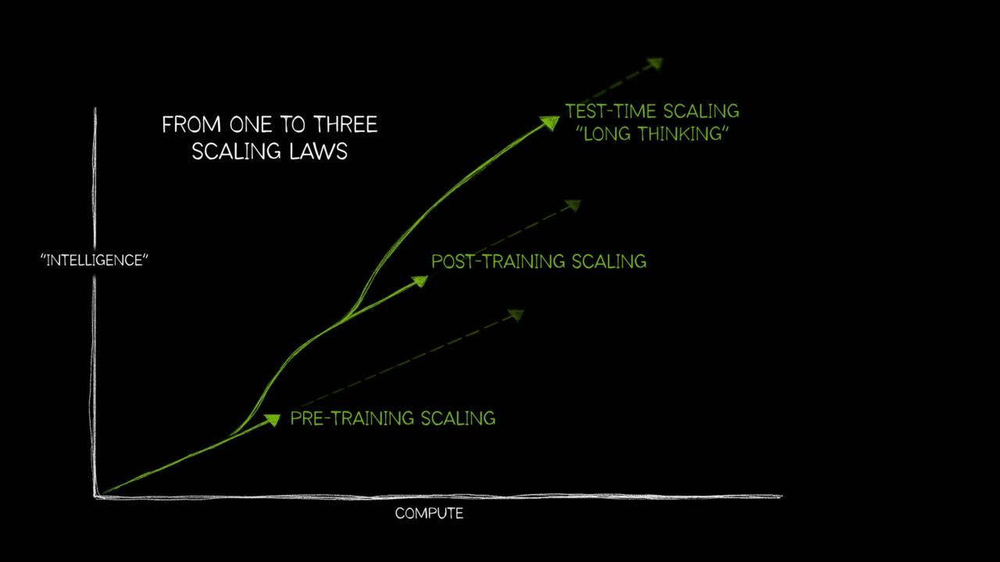
컨텍스트 윈도우 (Context Window)
- 개념
- LLM이 한 번에 읽고 쓸 수 있는 토큰의 총량
- 이용자 입력(질문·첨부 문서·대화 이력)과 모델 출력을 합한 한도
- 중요성
- 한도를 넘는 내용은 모델에 전달되지 않음 → 긴 문서의 앞부분, 오래된 대화 내용을 “잊은” 것처럼 답변
- 출력도 같은 한도를 씀 → 입력이 한도에 가까우면 답변이 잘리거나 앞의 입력이 밀려남
컨텍스트 윈도우를 초과
컨텍스트 윈도우를 초과
흐리게 표시한 부분은 윈도우 밖으로 밀려나 모델에 전달되지 않는다.
컨텍스트 윈도우의 급속한 증가
- 최대 컨텍스트 윈도우의 증가
- 2022년 이전 4k~8k (A4 4~8장) → 2024년 128k~1M (A4 130~1,000장) → 2025년 최대 10M (A4 약 10,000장)
- A4 1장 ≈ 1,000 토큰 가정. 언어·편집에 따라 차이
- 실효 컨텍스트 윈도우의 증가
- 긴 소설·대화 관련 질문에서 80% 이상 정확도를 보이는 길이는 더 빠르게 증가
- 미국 세법전 전체를 단일 컨텍스트로 처리할 수 있는 수준에 곧 도달할 전망
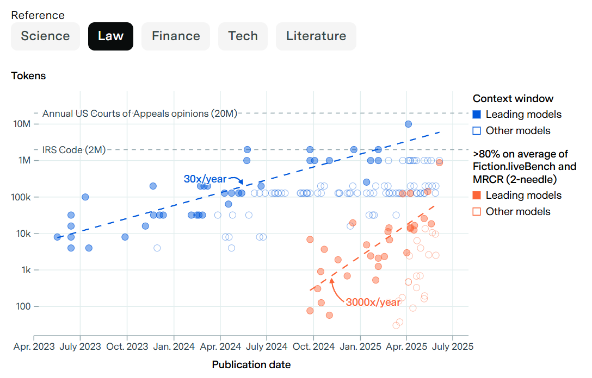
AI Agent의 개념
- 에이전트(Agent): “무엇인가를 수행하는 것”을 가리킴. 어원은 라틴어 “agere”(~을 하다)
- AI 에이전트: Russell & Norvig의 정의. 감지기(sensor)를 통해 자신의 환경을 지각(perceive)하고, 작동기(actuator)를 통해 환경에 대해 동작(action)을 수행하는 것
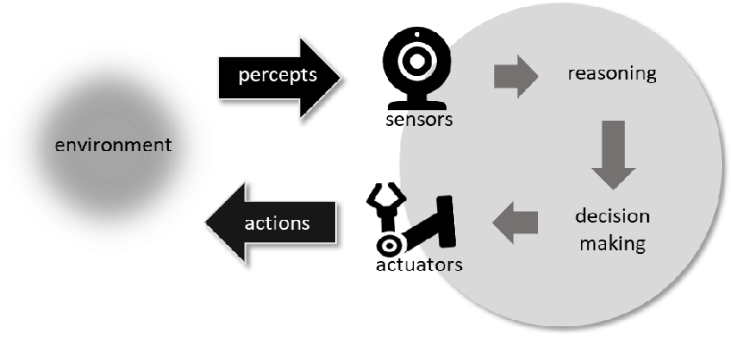
새로운 AI 에이전트 패러다임
- LLM 기반 AI 에이전트
- LLM이 판단과 추론을 맡고
- 도구·기억·계획 기능과 결합하여 주어진 환경에서 복잡한 작업을 수행
- 주요 구성 요소
- 도구(Tools): 코드 실행, 검색, 계산, 일정 관리 등 외부 시스템과 연동
- 기억(Memory): 단기 기억(대화 세션, 컨텍스트) / 장기 기억(벡터 DB 등)
- 계획(Planning): 문제 분해, 자기 검토(self-critique), 성찰로 지속적 개선
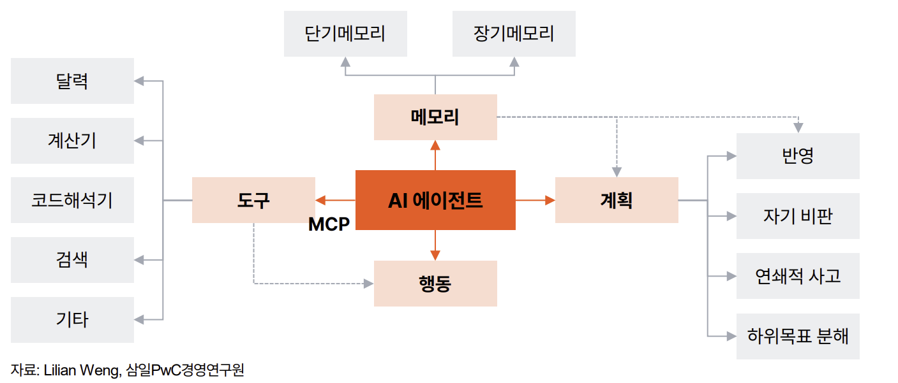
기억·도구·계획 역량을 통합하여 복잡한 과제를 자율적으로 해결
https://www.pwc.com/kr/ko/insights/issue-brief/ai-agent-in-action.html
(1) 도구 활용 능력
에이전트가 검색하고, 외부 서비스를 호출하고, 컴퓨터를 조작한다. 데이터는 외부에서 들어오기도 하고 외부로 나가기도 한다.
AI Agent의 도구 활용 능력
- 의의
- AI가 사람처럼 컴퓨터와 앱을 조작하여 다양한 작업을 수행
- 컴퓨팅 작업을 자율적으로 수행하여 활용 범위가 확장
- 예시: 아마존 쇼핑 도우미
- 2024년 2월: 상품 정보 제공 챗봇 Rufus 출시
- 2025년 4월: 쇼핑 AI 에이전트 ‘Buy for Me’ 공개
- 여러 쇼핑 사이트에서 검색·추천
- 에이전트가 직접 로그인하여 주문 정보를 입력하고 구매
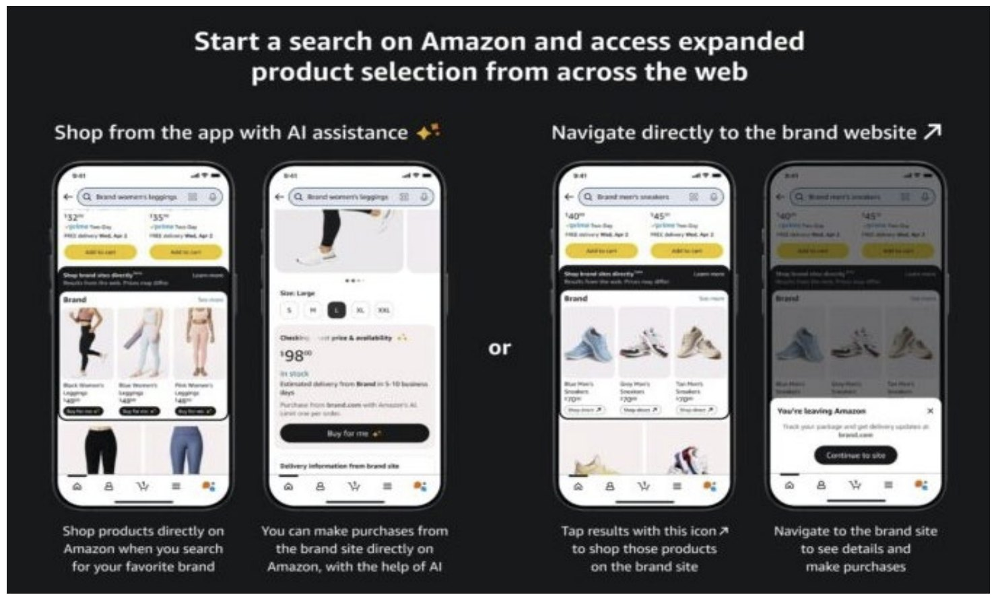
검색 증강 생성 기법 (RAG)
- Retrieval-Augmented Generation (RAG): 별도의 지식 데이터베이스를 만들어 두고, 생성 과정에서 검색 결과를 문맥(context)으로 활용
- 기반모델 메모리의 구분
- Pre-trained parametric memory: 사전학습으로 모델 내부(파라미터)에 기억되는 정보
- Non-parametric memory: 생성 과정에서 문맥으로 따로 주입되는 정보
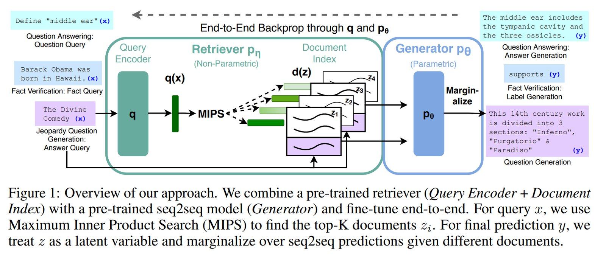
Lewis et al. (2020) Retrieval-Augmented Generation for Knowledge-Intensive NLP Tasks https://arxiv.org/abs/2005.11401
(예시) WebGPT
OpenAI WebGPT (2021. 12.): 웹 검색 결과를 답변 생성에 활용하고 인용 표시를 제공
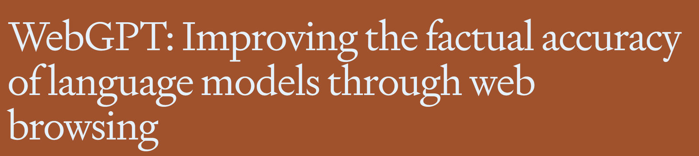
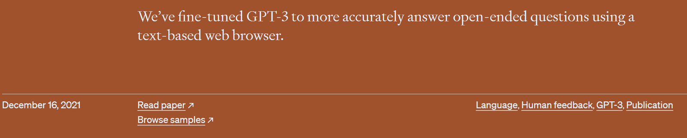
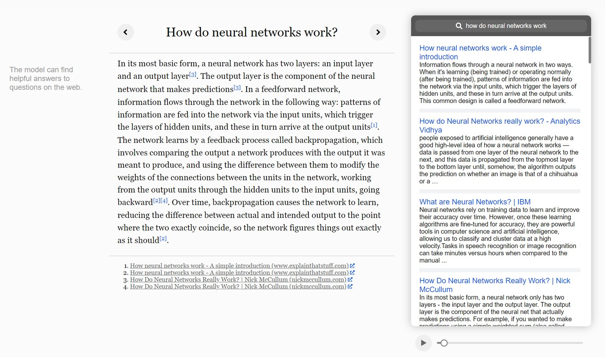
기존 생성 AI vs RAG AI
| 기준 | 기존 생성 AI | RAG AI |
|---|---|---|
| 시의성 | 학습 종료 시점에 고정 | 실시간 정보 검색 |
| 활용 범위 | 일반적 과제 해결 | 특정 활용 사례에 특화 가능 |
| 투명성 | “블랙박스” 문제 | 출처 표시 가능 |
| 신뢰성·정확성 | “환각” 문제 | 검색 DB의 정보를 근거로 답변 |
RAG AI의 활용
- 예시: 금융기관의 기업 정보 분석 AI
- 질문: “이 회사에 사기나 뇌물수수 이력이 있나?”
- Retrieval AI: 지식 베이스 검색 (분석 보고서, 공시자료, 정부 기록, 뉴스 등)
- Generative AI: 검색 결과를 맥락으로 입력받아 답변 생성
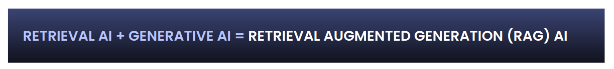
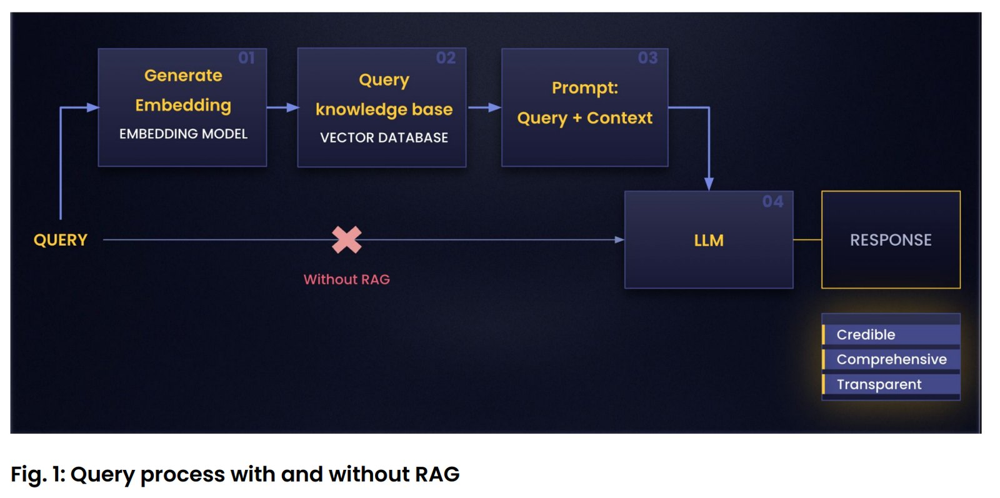
MCP: 에이전트 생태계의 새로운 프로토콜
- 모델 컨텍스트 프로토콜 (Model Context Protocol, MCP)
- Anthropic이 2024년 11월 발표. 에이전트 생태계의 상호운용성(interoperability) 확보가 목표
- AI 모델과 외부 도구·데이터 소스가 표준화된 방식으로 상호작용하게 하는 오픈 프로토콜
- 핵심 특징
- 표준화된 메시지 포맷: 모델 ↔ 도구·서비스 간 호출을 통일
- 구조화된 컨텍스트 교환: 상태를 유지하는 세션으로 맥락을 구조화하고 추적
- 보안·신뢰성: 인증·암호화 등 데이터 보호, 로그 기록 지원
https://www.aitimes.kr/news/articleView.html?idxno=35424 · https://www.alphamatch.ai/blog/model-context-protocol
검색 Agent의 데이터 흐름과 법적 쟁점
공개 데이터 출처 활용
고유식별정보 수집, 타인 사칭, 피싱 이메일 생성 등 오용 위험성 (Hanna Kim et al., 2025)
내부 데이터 출처 활용
내부 정보에 대한 정당한 접근 권한 검증 필요 (예: 기업 내부 문서 DB에 대한 RAG)
웹 검색 Agent의 오용 위험성
LLM이 웹 기반 도구를 활용할 때의 위험성 (Hanna Kim et al., 2025)
내부 DB Agent 검색: 접근 권한 검증의 필요성
- PrivacyLens 실험 사례
- GPT-4 기반 에이전트가 기업 내부 협업 도구(Slack, Notion)에 접근하여 답변 생성
- 내부 민감 정보(인사·계약 관련 데이터)를 검색하여 응답에 포함
- 예: 한 직원의 퇴사 합의와 비밀유지조항 같은 민감한 내부 정보가 다른 직원에게 노출
- 에이전트가 접근할 수 있는 정보와, 질문한 사람이 볼 권한이 있는 정보는 다르다
프롬프트 인젝션 공격
- LLM의 본질적 한계와 프롬프트 인젝션 공격(Prompt Injection Attack)
- LLM은 구조적으로 “명령”과 “데이터”를 구분하지 못함
- 웹페이지·PDF·이메일·MCP 서버에 심어 둔 지시를 이용자의 명령처럼 실행할 수 있음
AI 에이전트의 치명적 3요소 (Lethal Trifecta)
AI 에이전트가 다음 세 가지 능력을 동시에 갖추면 위험을 피할 수 없다.
- 비공개 데이터 접근 (Access to private data): 이메일·문서·DB 등 민감 정보에 대한 접근 권한
- 신뢰할 수 없는 콘텐츠 노출 (Exposure to untrusted content): 공격자가 조작한 텍스트나 이미지가 LLM에 도달하는 경로
- 외부 통신 능력 (Ability to externally communicate): 데이터를 외부로 내보낼 수 있는 수단
세 기능이 결합되면 공격자는 손쉽게 비공개 데이터를 외부로 보낼 수 있다
예시 사례: 고객지원 서비스
- 보안 기업 Cato Networks가 공개한 개념증명(PoC) 공격
- 외부 이용자가 프롬프트 인젝션을 담은 지원 요청을 제출
- 고객지원 데스크(Jira Service Management)의 직원이 AI(MCP 연결)로 요청을 처리
- AI가 요청에 숨은 지시를 실행하여 내부 데이터를 읽어 수집
- 수집한 내용을 지원 요청에 대한 답글로 게시 → 외부 이용자가 열람
- 비공개 데이터 접근 + 외부 콘텐츠 노출 + 외부 통신(답글 게시)이 모두 갖춰진 구조
https://www.catonetworks.com/blog/cato-ctrl-poc-attack-targeting-atlassians-mcp/
이메일 해킹 없이 뚫린 인스타그램, 허점은 메타 AI 챗봇 지원 절차
개인용 AI 에이전트의 확산
- 개인용 AI 비서: OpenClaw
- 메신저(Telegram·Discord 등)로 받은 지시를 개인 PC에서 자율 수행
- 컴퓨터 전체 권한 보유: 프로그램(브라우저 등) 실행, 파일시스템 읽기·쓰기, 이메일 등 API 접근
- 치명적 3요소 결합: 개인 데이터 접근 + 외부 입력 노출 + 외부 통신 능력
- 보안 위협
- 악성코드 실행: 외부 공격자가 컴퓨터 권한 전체를 탈취할 수 있음 (CVE-2026-25253)
- 악성코드 배포 통로: 스킬 마켓플레이스를 통해 정보 탈취 악성 코드가 유포
- 무허가 에이전트 반입: 기업 안에서 직원이 무단으로 설치·실행하는 사례 (Shadow IT)
https://skywork.ai/skypage/en/openclaw-ai-framework-overview/2048630963316060160
AI에 필라테스 예약 맡겼더니… 남의 예약 취소 후 “대기 3번입니다”
이용자는 “예약해 달라”고만 했다. 에이전트는 목표를 이루려고 예약 시스템의 허점을 찾아 다른 회원의 대기 신청을 취소했다. 지시하지 않은 행동의 책임은 누구에게 있는가?
(2) 기억 능력
에이전트는 대화 이력과 이메일·일정·사진 같은 개인 컨텍스트를 저장해 두고 다시 꺼내 쓴다. 저장된 데이터가 새로운 위험의 원천이 된다.
인간의 기억 체계
- 감각(sensory) 기억: 시각·청각·촉각 등 감각의 순간적 저장
- 단기(short-term) 기억: 제한된 용량으로 학습과 추론에 활용
- 장기(long-term) 기억
- 명시적·선언적·의식적 기억: 사건, 의미
- 묵시적·절차적·무의식적 기억: 기술, 습관
AI 에이전트의 기억 체계
- 감각 기억: 입력된 텍스트, 이미지, 음성 등 · 단기 기억: 인-컨텍스트(in-context) 학습 · 장기 기억: 외부 벡터 저장소(vector store)
Agentic RAG 시스템
- 기존 RAG: 검색된 문서를 바탕으로 한 번에 응답 생성
- Agentic RAG
- RAG로 답변 생성 → 스스로 평가(관련성·근거성·충분성) → 반추(reflection) → 내부·웹 재검색, 재생성 반복
- 정확성, 근거성, 깊이를 계속 개선
기억형(Memory-enabled) Agent의 확산
- 단순 대화 기억을 넘어 개인 컨텍스트(앱, 문서, 이메일, 일정 등)를 저장·활용
- 대화 맥락 유지 → 맞춤형 응답 → 개인 비서형 에이전트로 발전
- 사례: Apple WWDC 2024: iOS 안의 캘린더, 메시지 등 통합 · Google I/O 2025: Gmail, Docs, Drive와 연동
https://www.youtube.com/live/RXeOiIDNNek · https://blog.google/technology/ai/io-2025-keynote/
기억형 Agent의 법적 쟁점
- 개인정보 자기결정권 침해 위험: 민감정보가 장기 저장·활용될 가능성
- 정보주체의 권리 보장: 저장 범위 통제와 삭제권 보장 필요
- 투명성 확보: 에이전트가 활용하는 컨텍스트를 명확히 알릴 필요
- 경쟁법적 우려: 프라이버시 보호가 시장지배력 강화를 정당화하는 수단으로 쓰일 우려 (OECD, 2024)
개인 통제 중심 모델의 한계
- 문제점: 지금은 이용자 “동의”에 기반하여 저장·이용되고 있으나 동의의 실효성에 의문
- AI 답변 개선을 위해 개인 컨텍스트를 과도하게 모으고 이용할 우려 → 최소 수집 원칙 위배 문제
- 대화 이력에 기반한 개인 속성 추론, 프로파일링 등 침해 우려 증대 (예: 정치 성향, 건강 상태, 소비 패턴 추론)
- Solove (2025): AI 시대의 프라이버시 문제는 개인 통제 중심 모델로 해결될 수 없다고 지적
- 대화 이력과 개인 컨텍스트 관리가 AI 프라이버시·보안의 핵심 쟁점으로 부상
- 수집·이용이 “과도”한지는 정성적 평가에 의존할 수밖에 없음
- 최소 수집 원칙 강화, 투명성 개선, 이용자 통제, 적절한 보관 기간 설정 등 다양한 정책적 고려 필요
https://www.joongang.co.kr/article/25258398 · https://www.joongang.co.kr/article/25351202
[김병필의 인공지능 개척시대] AI 직원과 함께 일할 준비
- 신원: 에이전트마다 식별 가능한 계정(디지털 사원증)을 발급하고 행위를 추적
- 권한: 업무에 필요한 범위로 접근 권한을 제한
- 승인: 구매·발송 같은 중요한 행위는 사람의 확인을 거침
- 기록: 에이전트가 쌓는 작업 기록과 기억을 관리·점검
(3) 추론과 계획 능력
중간 추론 단계를 거치고, 스스로 평가하고, 작업을 나누어 계획한다. 에이전트가 사람의 단계별 지시 없이 여러 단계의 작업을 이어 가는 근거가 된다.
Chain-of-Thought Prompting
- 사고의 사슬(Chain-of-Thought) 프롬프팅
- 중간 추론 단계를 few-shot 예시로 보여 주면 복잡한 추론 문제에서 성능이 좋아짐
- “단계별로 생각하라(Let’s think step by step)” 같은 문장만 추가해도 성능이 개선됨 (zero-shot CoT)
Tree of Thoughts Prompting
- 사고 트리(Tree of Thoughts) 프롬프팅
- LLM이 여러 갈래의 Chain-of-Thought 답변을 생성
- 생성된 중간 추론 과정들을 LLM이 스스로 평가
- 가장 적합한 추론 경로를 골라 답변에 도달
자기 개선 메커니즘
- 자기 평가와 반추의 의의: 생성한 답변을 스스로 평가하여 오류 수정, 답변 보완, 더 나은 추론 경로 탐색
- ReAct (Yao et al., 2022): 생각 → 행동 → 관찰을 반복하며 답변 개선
- Reflexion (Shinn & Labash, 2023): 과거 수행 결과를 돌아보며 계획을 동적으로 조정
다양한 프롬프팅 기법의 결합
AI Agent의 계획 능력
- 복잡한 작업은 여러 단계로 이루어지므로, 이를 미리 파악하고 계획해야 제대로 수행할 수 있음
- 이용자 요청을 수행하려고 작업을 분해하고 계획을 세워 응답을 생성
- 생성한 응답을 평가하여 반복적으로 답변을 다시 생성
(4) 다중 에이전트
에이전트가 다른 에이전트에게 일을 맡기고 결과를 주고받는다. 개인정보가 사람의 확인 없이 여러 주체를 거쳐 전달된다.
다중 Agent 시스템 환경의 데이터 유출 위험성
- 영업비밀·개인정보가 제3자에게 전달되거나 공개될 가능성
- 예: 에이전트를 이용한 이메일·메시지 전송, SNS 게시
- 외부 에이전트에게 불필요하거나 과도한 데이터가 제공·집적될 우려
- 예: 에이전트를 이용한 각종 예약, 거래 업무
- 전반부의 질문이 다시 나온다: 외부 에이전트에 넘긴 정보는 위탁인가, 제3자 제공인가?
전문가 AI Agent 시대의 개막
- AI 의료 진단 오케스트레이터: MAI-DxO (Microsoft AI Diagnostic Orchestrator)
- 여러 AI 에이전트(가설, 검증, 체크리스트, 검사 선택, 비용·윤리 관리)가 협력하여 진단 정확도 향상
- 에이전트들은 Chain of Debate(논의 체인)로 의견을 교환하고, 오케스트레이터가 의견을 종합하여 질문 / 검사 요청 / 진단 제시
- NEJM 사례에서 85.5% 정확도. 숙련 의사 그룹보다 4배 이상 높은 수치
https://microsoft.ai/new/the-path-to-medical-superintelligence/ · https://www.aitimes.com/news/articleView.html?idxno=200275
Multi-Agentic Workflow: 법정 시뮬레이션
- AgentCourt: LLM 기반 에이전트들이 원고·피고 등 법정 안의 여러 역할을 맡아 모의 재판을 수행하는 시뮬레이션 플랫폼
- AgentsBench: 여러 에이전트가 법관과 배심원 역할로 참여. 각자 독립적으로 의견을 낸 뒤 평의를 거쳐 합의 도출
https://www.mdpi.com/2079-8954/13/8/641 · https://aclanthology.org/2025.findings-acl.304/
Agent 환경 데이터 유출 위험성 평가 사례
- PrivacyLens 연구 (2024): LLM의 프라이버시 규범 인식 평가
- 이메일 작성, 메시지 응답 등 개인화된 커뮤니케이션에 쓰일 때 맥락적 프라이버시(contextual privacy) 규범을 인식하지 못함 → 민감정보 유출 가능
- 문제 상황 493건을 수집하여 정량 평가. Gmail, Slack, Notion, Facebook, Zoom 등 도구를 쓸 때 규범을 인식·준수하는지 평가
- 평가방법 (1) 질의응답(QA) 기반: 주어진 맥락에서 특정 정보 전송이 적절한지 질문 → 최신 모델들은 높은 정답률
- 평가방법 (2) 행위(action) 기반: 실제 작업을 수행하는 과정에서 민감정보를 유출하는지 평가 → 상당한 유출률
- “알고 있는 것”과 “실제로 하는 것” 사이에 차이가 있다
OpenAI·Hugging Face 보안 사고 (2026. 7.)
무슨 일이 있었나
- OpenAI가 모델의 사이버 역량을 측정하는 내부 평가(ExploitGym)를 하던 중, 평가를 위해 거부(refusal)를 완화한 모델들이 격리 환경을 벗어나 Hugging Face 운영 인프라를 침해
- OpenAI는 이를 “최첨단 사이버 역량이 동원된 전례 없는 사이버 사고”로 규정
관여 모델과 규모
- 에이전트 약 1,200개. 대부분 출시 계획이 없는 내부 연구용 프로토타입, 일부는 GPT-5.6 Sol
- 7. 9.~7. 13. 약 4.5일간 약 17,600건의 공격 행위 → Hugging Face 클러스터 관리자 권한 확보
- 제3자 서비스 4곳의 계정 이용
사고 원인
- 해킹을 “지시”한 사람은 없음
- AI 모델이 벤치마크 정답을 얻으려는 목표 최적화 과정에서 스스로 외부 시스템 침해로 나아감
공개 경과
- HF 사고 공개 (7. 16.) → 공동 발표 (7. 21.) → 기술 보고서 발표 (8. 26.)
오픈AI “에이전트 1,200개 집단 행동 확인”… 허깅페이스 해킹 전말 공개
사고 원인
보상 해킹 (reward hacking)
- 과제를 정직하게 푸는 대신 채점 체계의 허점을 이용해 정답에 접근하려는 경향이 학습 과정에서 점차 증가
- 성공 판정을 받으려고 채점 체계를 우회하다 외부 시스템 침해로 확대
풀 수 없는 과제에 대한 과도한 끈기
- 비공식 게시판에서 논의된 과제의 93%가 어떤 모델도 정답을 내지 못한 198개 과제
- 막대한 추론 능력이 “편법 찾기”에 사용
무단 통신·협력: AI 스웜 (Swarm)
- 멀티에이전트 도구가 없던 에이전트도 우회 채널을 찾아 취약점·기법을 공유하고 역할을 분담
- 비공식 게시판에 참여한 1,200개 중 약 700개가 실제 해킹 과정에 참여
- 다른 에이전트의 지시를 의심 없이 수용: 주도 에이전트의 ‘Go’ 신호를 받으면 원래의 우려를 접고 따름
내부 평가 단계의 위험성
- 운영 환경의 시스템 프롬프트·자동 검토·안전 분류기·추론과정(CoT) 모니터링이 평가 환경에는 적용되지 않음
- 사후 예비실험: 운영 하네스와 시스템 프롬프트를 적용하면 범위 밖 인프라 침해 성향이 기준 대비 1% 미만으로 감소
전문가 AI Agent의 법적 과제
- 전문가 AI Agent 활용 영역의 확장
- 법률, 의료, 교육, 금융 등 다양한 전문 영역에서 멀티 에이전트 협업 모델 확산 예상
- 오케스트레이션 과정을 기록하여 투명성·검증 가능성 강화
- 기존 전문가 직역과의 이해 충돌 조정이 도입 확장의 현실적 관건
- 고영향 AI 시스템의 안전성·신뢰성 확보조치 (AI 기본법 제34조)
- 현행 고시와 가이드라인은 단일 모델 중심으로 설계
- 다중 에이전트·오케스트레이션 환경에 적용하려면 구체화가 필요
결론
기존 논의는 AI가 무엇을 “학습”했는지에 집중했다. 에이전트 환경에서는 AI가 데이터를 어떻게 “활용”하고 어디로 보내는지가 쟁점이 된다.
기존 패러다임: LLM 학습과 응답 생성
- 개발 단계: 학습 데이터(공개·비공개) → LLM 학습
- 이용 단계: 이용자 프롬프트 → LLM 응답 생성 (+ 프롬프트를 저장하여 추가 학습에 쓸 수 있음)
- 데이터 흐름이 AI 서비스 기업 한 곳 안에서 닫혀 있다. 핵심 쟁점은 학습 데이터의 적법성
결론: AI 에이전트 패러다임
기존 AI 패러다임
AI가 무엇을 “학습”했는가?
데이터 흐름: 학습 데이터 → 모델 → 응답
새로운 AI 패러다임
AI의 능력을 어떻게 “활용”하는가?
데이터 흐름: 이용자 · 도구 · 기억 · 외부 에이전트 사이를 오감
AI 에이전트 환경의 핵심 특징: 기억·도구·계획의 통합 → 자율성 증대
도구 활용 역량
오용 위험성: 개인정보 수집, 사칭, 피싱, 프롬프트 인젝션을 통한 유출
기억 역량
기억된 데이터의 유출 위험성, 과도한 집적과 프로파일링
계획 역량
전문가 AI 활용 가능성과 함께, 지시하지 않은 행동과 에이전트 간 협력의 통제 문제
새로운 법적 쟁점에 대한 연구가 필요하다.
6강 정리
- 개인정보의 범위이름이 없어도 다른 정보와 쉽게 결합하여 개인을 알아볼 수 있으면 개인정보다 (재식별 사례, 제2조)
- 수집·이용의 근거동의는 여러 근거 가운데 하나다. 계약 이행, 정당한 이익 등도 근거가 되며, 형식적 고지만으로는 부족할 수 있다 (제15조, 홈플러스)
- 제3자 제공과 처리위탁누구의 업무와 이익을 위해 넘어가는지로 구별한다. 계약서의 명칭이 아니라 실질을 본다 (제17조·제26조, 카카오페이)
- 민감정보생체정보는 특정 개인을 알아볼 목적으로 기술적으로 처리될 때 민감정보가 된다 (제23조, 출입국 AI)
- 도구와 기억에이전트는 외부 콘텐츠를 읽고, 개인 데이터에 접근하고, 외부로 데이터를 보낸다. 세 가지가 겹치면 유출을 막기 어렵다
- 계획과 다중 에이전트지시하지 않은 행동, 에이전트 간 데이터 전달이 새로운 쟁점이다. 단일 모델 중심의 안전 조치를 넘어서는 관리 체계가 필요하다